Chapter 8 listed everything that breaks in a distributed system. This chapter asks: what guarantees can we still build on top of that mess? It starts with linearizability, the strongest common guarantee ("act as if there is only one copy of the data"), shows where it is needed and why it is slow. Then it looks at ordering: causality, Lamport timestamps and total order broadcast, and finds that "everyone sees the same log in the same order" is secretly the same problem as linearizable compare-and-set. Next comes atomic commit across machines with two-phase commit (2PC), which works but gets stuck when its coordinator dies. Finally, fault-tolerant consensus (Paxos, Raft, Zab, Viewstamped Replication) fixes that by voting with a majority, and tools like ZooKeeper and etcd let you "outsource" consensus instead of writing it yourself.
The chapter is one long chain. Each step solves the previous problem, then hits a new wall. Read the rows top to bottom.
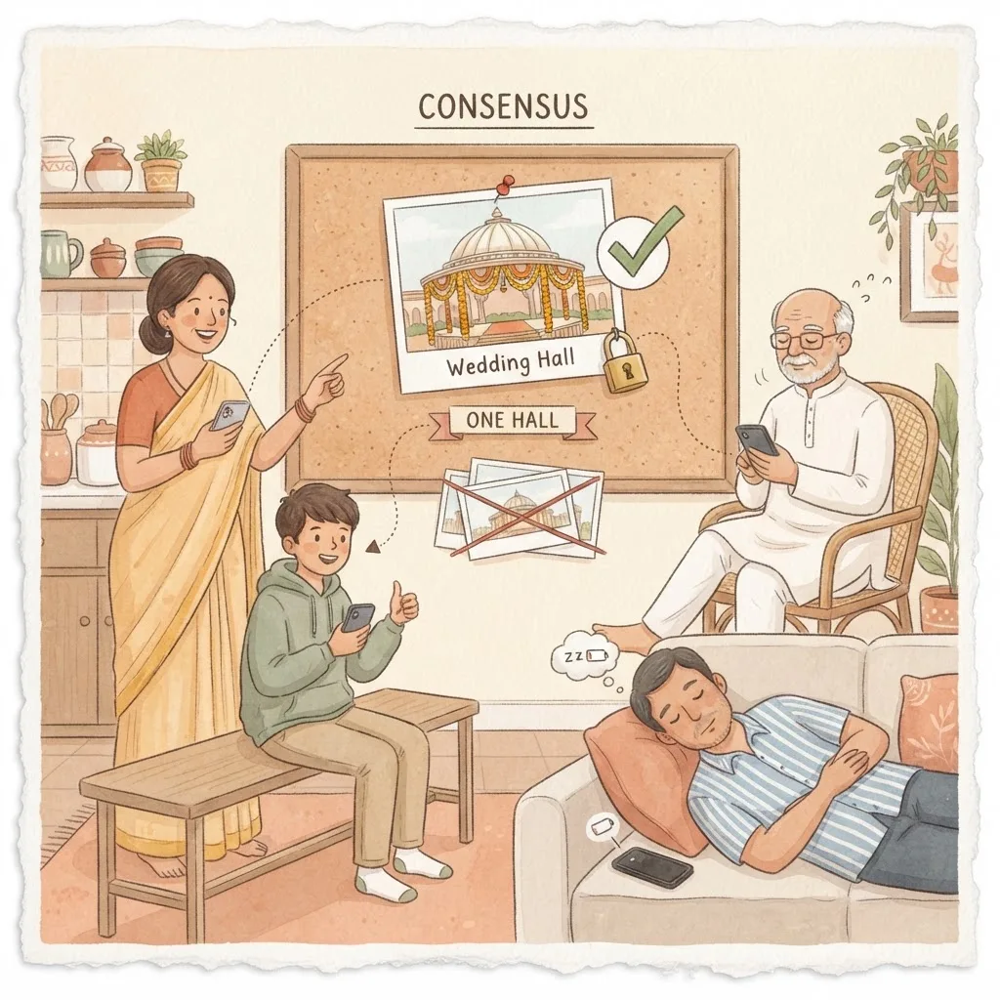
Think of a family WhatsApp group planning a wedding. Eventual consistency: everyone's phone will show all messages… at some point. Causality: nobody sees "Yes, booked!" before seeing "Shall we book the hall?". Linearizability: it's as if everyone is reading one notice board on the same wall. Consensus: the family must pick one hall, everybody agrees which one, and nobody can change it afterwards, even if Uncle's phone is switched off. Where it breaks: humans can phone each other to sort out confusion; machines only have the (unreliable) network from Chapter 8.
The quote sums up the chapter's central tension: a system can keep answering (alive) but maybe give stale answers (wrong), or refuse to answer until it is sure (right, but "dead" for a while).
Chapter 8 showed that lots can go wrong. The simplest way to handle a fault is to let the whole service fail and show an error. If that is not acceptable, we must tolerate faults: keep the service working correctly even when some internal part is broken.
This chapter gives examples of algorithms and protocols for fault-tolerant distributed systems. It assumes all of Chapter 8's problems can happen. Packets can be lost, reordered, duplicated or arbitrarily delayed. Clocks are approximate at best. Nodes can pause (for example during garbage collection, GC) or crash at any time.
The best way to build fault-tolerant systems: find general-purpose abstractions with useful guarantees, implement them once, and let applications rely on them. Chapter 7 did exactly this with transactions. The app can pretend three things: there are no crashes (atomicity), nobody else touches the data at the same time (isolation), and disks never fail (durability). Crashes, race conditions and disk failures still happen, but the abstraction hides them.
Now we look for abstractions that let an application ignore some distributed-systems problems. One of the most important is consensus: getting all of the nodes to agree on something. Doing this reliably despite network faults and process failures is surprisingly tricky.
Example use: a database with single-leader replication. If the leader dies and you need to fail over, the remaining nodes can use consensus to elect a new leader. There must be only one leader and all nodes must agree who it is. If two nodes both think they are leader, that is split brain, and it often loses data. Correct consensus prevents this.
Plan: first explore the range of guarantees and abstractions a distributed system can offer, then (from "Distributed Transactions and Consensus") algorithms for consensus. We need to know the limits: sometimes a system can tolerate a fault and continue, sometimes it cannot. These limits have been studied in depth, in proofs and in real implementations. The book sticks to informal intuitions, not formal models and proofs; the references go deeper.
This is the book's own example (single-leader failover), drawn out. The node names are made up.
Read it top to bottom: while A is alive there is no question. When A dies, B and C each have to answer "who is leader now?" If they answer the same way (consensus), the database carries on with one leader. If each decides on its own, you get split brain: two nodes both accept writes, their data drifts apart, and some writes are thrown away later. The rest of the chapter builds the tools (linearizability, ordering, consensus) that make the top picture safe.
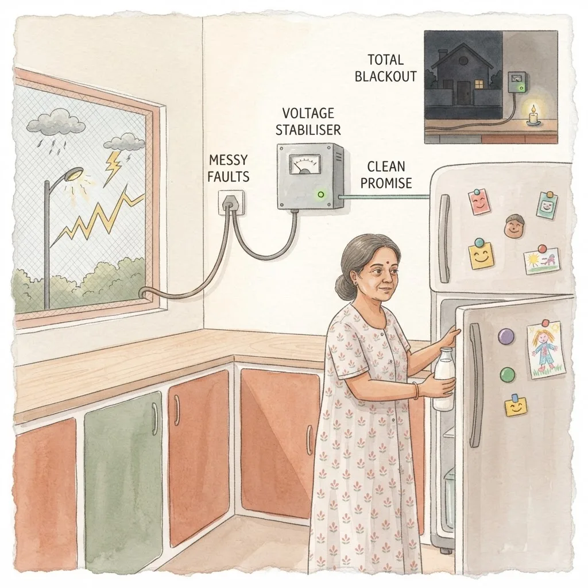
An electricity voltage stabiliser at home. Your fridge doesn't care that the grid voltage swings between 180 V and 260 V; the stabiliser hides that and gives a steady 230 V. A transaction or a consensus service is a stabiliser for data: messy faults go in, a clean promise comes out. Where it breaks: a stabiliser can't help in a total power cut; similarly, consensus can't decide anything if most nodes are down.
Writing fault-handling code in every application is error-prone because the failure cases (Chapter 8) are rare, weird and hard to test. Putting the hard logic in one well-tested layer (a database, a coordination service) means each app gets correctness "for free", the same reason you use a library instead of writing your own TCP stack.
Chapter 5 ("Problems with Replication Lag") showed timing issues in replicated databases. Look at two nodes at the same moment and you will probably see different data, because writes reach different nodes at different times. This happens with every replication method: single-leader, multi-leader or leaderless.
Most replicated databases give at least eventual consistency: if you stop writing and wait some unspecified time, eventually all reads return the same value. The inconsistency is temporary and resolves itself (assuming network faults are also eventually repaired). A better name might be convergence: all replicas eventually converge to the same value.
But it is a very weak guarantee: it says nothing about when replicas converge. Until then, reads could return anything or nothing. Example: write a value and immediately read it; you may not see it, because the read went to another replica (see "Reading your own writes" in Ch.5).
Eventual consistency is hard for developers because it is so unlike a normal variable in a single-threaded program. Assign a variable and read it right after: you never expect the old value or an error. A database looks like a variable you read and write, but its behaviour is far more complicated.
With weak guarantees you must constantly remember the limitations. Bugs are subtle and hard to find by testing, because the app works well most of the time. Edge cases only show up during a fault (e.g. network interruption) or high concurrency.
This chapter explores stronger consistency models. They are not free: they may have worse performance or be less fault-tolerant. But they are easier to use correctly. Knowing a few models helps you pick what fits.
There is some similarity with the hierarchy of transaction isolation levels (Ch.7, "Weak isolation levels"), but they are mostly independent concerns. Isolation is about race conditions between concurrent transactions. Distributed consistency is about coordinating the state of replicas despite delays and faults.
The chapter's three parts, deeply linked:
| Concern | Question it answers | Chapter |
|---|---|---|
| Isolation levels | What can concurrent transactions see of each other? | Ch.7 |
| Consistency models | What can a read see, given replicas that update at different times? | Ch.9 |
modelled The 300 ms lag and the values are invented to make the idea concrete.
You set x = 5 on replica 1. Replica 2 still holds the old value 3 until the change arrives. A read sent to replica 2 at 100 ms gets 3, even though your own write already succeeded. At 400 ms both replicas say 5: they have converged. Eventual consistency only promises the second picture will happen some day; it never says how soon. If the lag grows to 30 seconds during a network problem, that is still "eventually consistent". A normal program variable would never do this: after x = 5, reading x gives 5. That gap is why weak guarantees are hard to program against.
A cart count is changed from 3 to 5 on Replica 1. Replica 2 gets the change after 300 ms of lag. All numbers are modelled.
cart:42 = 5 on Replica 1 (it was 3). Replica 1 is updated at once.cart:42 from Replica 2: gets 3. Stale, but this is allowed under eventual consistency.A school notice gets photocopied to 5 classroom boards by a peon who walks around. "Eventually consistent" means: if the principal stops changing the notice, after some time all 5 boards match. But nobody promises when; a student in class 5 may read yesterday's notice right after the principal changed it. Where it breaks: a peon walks in a predictable loop; network delays are unbounded.
A write is applied at different moments on different replicas. Any read that lands "in between" can see the old value. Stronger models add coordination (waiting, voting) so that reads can't land in that gap, which is exactly what costs latency and availability.
In an eventually consistent database, ask two replicas the same question at the same time and you may get two answers. Wouldn't it be simpler if the database gave the illusion that there is only one replica? Then every client sees the same data and nobody worries about replication lag.
That is linearizability, also called atomic consistency, strong consistency, immediate consistency or external consistency. The exact definition is subtle, but the basic idea: make the system appear as if there were only one copy of the data, and all operations on it are atomic. There may be many replicas in reality, but the application need not care.
In a linearizable system, as soon as one client successfully completes a write, all clients reading must be able to see that value. Keeping the single-copy illusion means the value you read is the most recent, up-to-date one, not from a stale cache or replica. So linearizability is a recency guarantee.
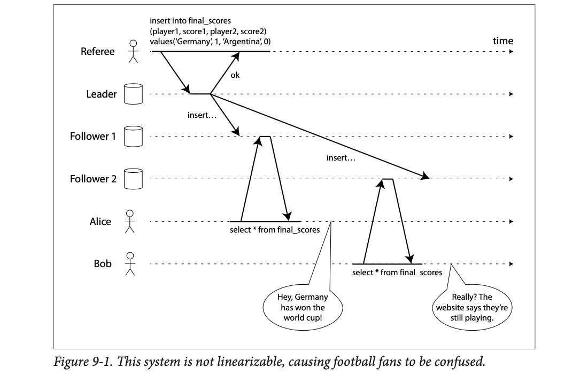
Time flows left to right. Each horizontal dashed line is one actor. The referee sends insert into final_scores … ('Germany', 1, 'Argentina', 0) to the leader, which replies ok. The leader forwards the insert to Follower 1 quickly (short arrow) and to Follower 2 slowly (long arrow). Alice's select hits Follower 1 after it has the row: "Hey, Germany has won the world cup!". Bob starts his select after hearing Alice, but it hits Follower 2 before the slow insert arrives: "Really? The website says they're still playing."
The story: Alice and Bob sit in the same room checking the 2014 football World Cup final. Just after the final score is announced, Alice refreshes and excitedly tells Bob. Bob reloads, but his request goes to a lagging replica, which says the game is still on.
If both had reloaded at the same time, different results would not be surprising: they don't know exactly when the server processed each request. But Bob knows he pressed reload after hearing Alice, so he expects a result at least as recent as hers. Getting a stale result violates linearizability.
The book's Fig 9-1 story with clock times added so you can see the gap. The times are modelled, the story is the book's.
INSERT INTO final_scores VALUES ('Germany',1,'Argentina',0) to the leader. The leader stores it and says ok. Right now only the leader has the final score.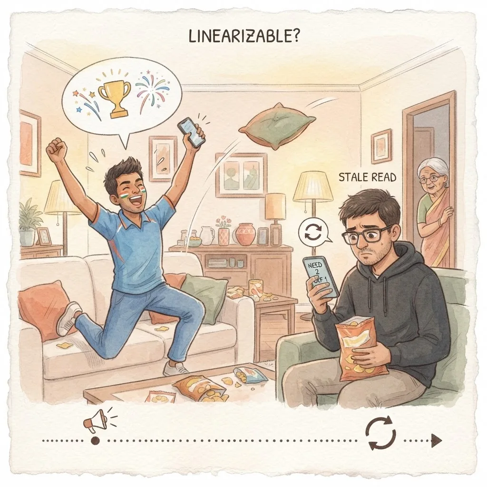
India vs Pakistan, last ball. Your friend shouts "We won!" from his phone's Cricbuzz. You refresh yours and it still says "need 2 off 1". You know your refresh came after his shout, so a correct "single scoreboard" could never show you the older score. Where it breaks: in cricket apps a few seconds of lag is harmless; the book later shows cases (locks, bank balances) where it is not.
Asynchronous replication (Ch.5) sends the write to followers at different speeds. Routing reads to any follower trades recency for speed. Linearizability forbids any read that starts after another read has already seen the new value from returning the old one.
The basic idea is simple ("one copy"), but pinning it down needs care. Fig 9-2 shows three clients reading and writing the same key x. In distributed-systems papers, x is called a register. In practice it could be one key in a key-value store, one row in a relational database, or one document in a document database.
The figure shows requests from the clients' point of view, not database internals. Each bar is a request: its start is when the request was sent, its end is when the response arrived. Because network delays vary, a client doesn't know exactly when the database processed its request, only that it happened somewhere between sending and receiving.
Footnote i. The diagram assumes a global clock (the horizontal axis). Real systems don't have accurate clocks (Ch.8 "Unreliable Clocks"), but for analysing an algorithm we may pretend such a clock exists, as long as the algorithm itself can't use it. The algorithm only sees a mangled approximation of real time from a quartz oscillator and NTP.
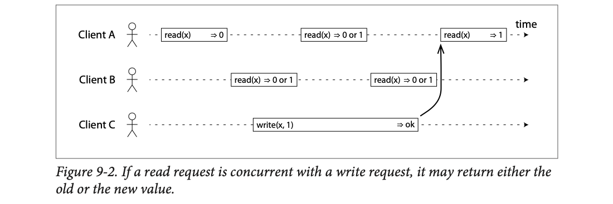
Boxes are requests; box width = time from send to reply. Client C's write(x, 1) is the long box. Any read box that overlaps it (A's middle read, both of B's reads) is labelled "0 or 1". A's first read ends before the write begins, so it must be 0. A's last read starts after the write ended (arrow), so it must be 1.
Two operation types:
read(x) ⇒ v: the client asked to read register x; the database returned v.write(x, v) ⇒ r: the client asked to set x to v; the database returned r (ok or error).x starts at 0; client C writes 1. Meanwhile A and B keep polling. What can they get?
That is not enough. If overlapping reads could return either value, a reader might see the value flip back and forth between 0 and 1 during the write. That isn't "a single copy".
Footnote ii. The weaker semantics, where reads concurrent with a write may return old or new, is called a regular register.
So we add one more constraint (Fig 9-3): there must be some point in time (between the start and end of the write) where x atomically flips from 0 to 1. Once any client's read returns 1, all later reads must also return 1, even if the write hasn't completed.
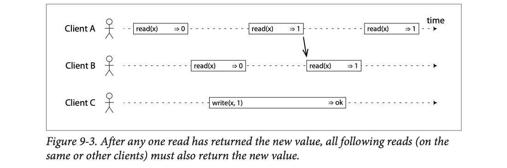
A's middle read is the first to return 1. The arrow says: B's second read starts strictly after A's read ended, so B must also get 1, even though C's write box is still open. B's first read started before A saw 1, so 0 is fine there. It is the Alice-and-Bob rule again.
C's write of x=1 runs from t=30 to t=70. Somebody else's read already returned 1 at t= (move it). Drag your read's start; it lasts 10 units.
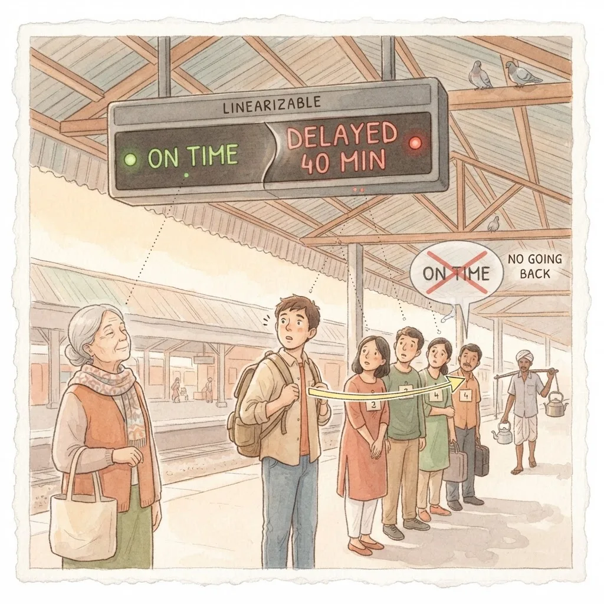
A railway platform display switching "Train 12951: on time" to "Delayed 40 min". While the change is being pushed, a passenger glancing at it might see either. But once one passenger has seen "Delayed", any passenger who looks after that must also see "Delayed": the board can't flip back. Where it breaks: one physical board can't flip back anyway; replicated data can, which is why the rule must be enforced.
Each operation is pictured as taking effect at a single instant (a "linearization point") inside its bar. Linearizability = there exists a choice of such points that is consistent with real time and with register rules. Before the point, everyone sees 0; after, everyone sees 1. No flip-flopping.
We can draw each operation as taking effect atomically at a point in time. Fig 9-4 is a more complex example, and adds a third operation:
cas(x, vold, vnew) ⇒ r: an atomic compare-and-set (Ch.7). If x currently equals vold, atomically set it to vnew. If x ≠ vold, leave it alone and return error. r is ok or error.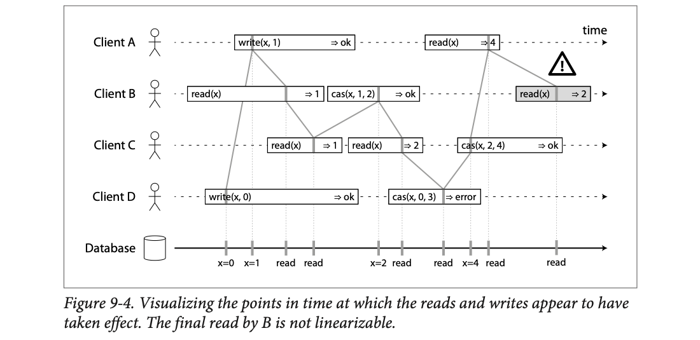
Inside each bar there is a small vertical marker: the instant we think the operation executed. Grey lines join the markers in order; the bottom "Database" axis lists that order: x=0 (D's write), x=1 (A's write), read, read, x=2 (B's cas), read, read (D's failed cas), x=4 (C's cas), read (A sees 4), and finally B's shaded read. The rule: the joining line must always move left → right. Every read must return the value from the most recent write in that order.
Details worth noticing:
cas(x, 0, 3) fails because by then x is no longer 0.That's the intuition; the formal definition is more precise. You can test whether a system's behaviour is linearizable, though it is computationally expensive. Record the start and end time of every request. Then check whether the requests can be arranged into one valid sequential order. Tools like Knossos, by Kyle Kingsbury, do this.
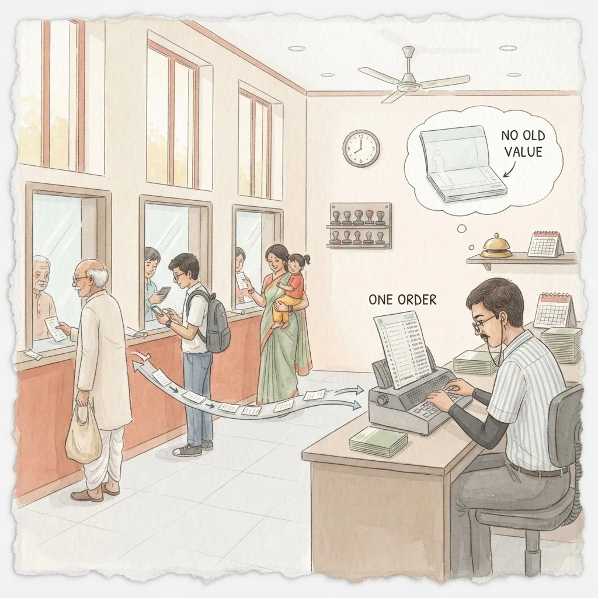
A bank passbook printed by one clerk. No matter how many customers queue at different windows, every entry is printed in one order on one passbook; once the passbook shows balance ₹4, nobody can later be shown ₹2 as "current". Where it breaks: in the passbook the order is literally physical; in a replicated database it must be reconstructed so it is consistent with what clients saw in real time.
A checker tries every possible placement of linearization points inside the bars. If some placement gives a legal register history that never goes back in real time, the run is linearizable. The search space explodes with concurrency, which is why the check is expensive.
The two words are easily confused because both sound like "can be arranged in a sequential order". They are quite different guarantees:
| Serializability | Linearizability | |
|---|---|---|
| Kind of property | Isolation property of transactions | Recency guarantee on reads/writes of a register |
| Scope | Each transaction may read/write many objects (rows, documents, records) | One individual object; no grouping into transactions |
| Promise | Transactions behave as if run in some serial order, each finishing before the next starts | Each operation sees the latest value; one-copy illusion |
| Order must match real time? | No: the serial order may differ from the actual run order | Yes: never go back in time |
| Prevents write skew? | Yes | No, unless you add measures like materializing conflicts (Ch.7) |
A database can give both: that combination is strict serializability or strong one-copy serializability (strong-1SR).
Implementations of serializability with two-phase locking (2PL) or actual serial execution are typically linearizable. But serializable snapshot isolation (SSI) is not linearizable: by design it reads from a consistent snapshot to avoid lock contention between readers and writers. The whole point of a snapshot is that it does not include writes newer than the snapshot, so snapshot reads aren't linearizable.
Bottom-left, a concrete case (SSI): Transaction T1 sets a ticket price from ₹500 to ₹600 and commits at 10:00:00. Transaction T2 started at 09:59:59, so it reads from a snapshot taken then and sees ₹500 at 10:00:01. The result is still serializable (as if T2 ran entirely before T1), but it is not linearizable: T2's read began after T1 finished and still saw the old value.
Top-right, a concrete case (write skew, Ch.7): Two doctors are on call. Each one, at the same moment, reads "2 doctors on call" and sets their own row to off-call. Every single read and write was linearizable, yet nobody is on call now. Linearizability works on one object at a time; it does not group the read and the write into one transaction.
The times and prices are invented for the example; the classification (2PL/serial execution typically linearizable, SSI not) is the book's.
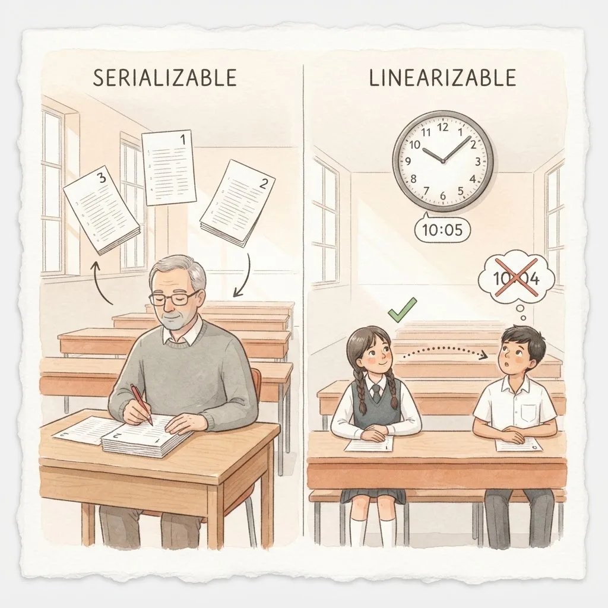
Serializability is like an exam hall where answer sheets get graded as if students wrote one after another; the grader may pick any order. Linearizability is the hall clock: everyone reading it at 10:05 after someone else read 10:05 must not see 10:04. Where it breaks: a real clock covers one value; linearizability is per object (each register has its own "clock").
Serializability is about groups of operations not interfering; it allows reordering in time. Linearizability is about single operations respecting real time. 2PL makes transactions wait for the latest committed data (so it also respects time); SSI deliberately reads an older snapshot (so it doesn't).
When does linearizability actually matter? The football score is a frivolous example: a result a few seconds old does no real harm. But in a few areas it is an essential requirement.
A single-leader system must ensure there is only one leader (no split brain). One way to elect a leader is a lock: every node that starts tries to acquire it, and the winner becomes leader. However the lock is implemented, it must be linearizable: all nodes must agree who owns it, or it is useless.
Coordination services like Apache ZooKeeper and etcd are often used for distributed locks and leader election. They use consensus algorithms to implement linearizable operations in a fault-tolerant way (plate 39). There are still many subtle details to get right (e.g. the fencing issue in Ch.8 "The leader and the lock"), and libraries like Apache Curator help with higher-level recipes on top of ZooKeeper. But a linearizable storage service is the foundation for these tasks.
Footnote iii. Strictly, ZooKeeper and etcd give linearizable writes, but reads may be stale by default, since any replica can serve them. You can ask for a linearizable read: etcd calls it a quorum read; in ZooKeeper you call sync() before the read (see plate 24).
Distributed locking is also used at a much finer grain in some databases, such as Oracle Real Application Clusters (RAC). RAC uses a lock per disk page, with multiple nodes sharing the same disk storage. These linearizable locks are on the critical path of every transaction, so RAC deployments usually have a dedicated cluster interconnect network between database nodes.
Lock key /election/leader lives on two replicas. Node A and Node B both start up and both try cas(owner, null, me). Node names and times are invented.
owner = null. Nobody is leader yet.cas(owner, null, A) to R1. R1 had null, so it sets owner = A and replies ok. A becomes leader.cas(owner, null, B). R2 still has null, so it also says ok.owner = A, not null.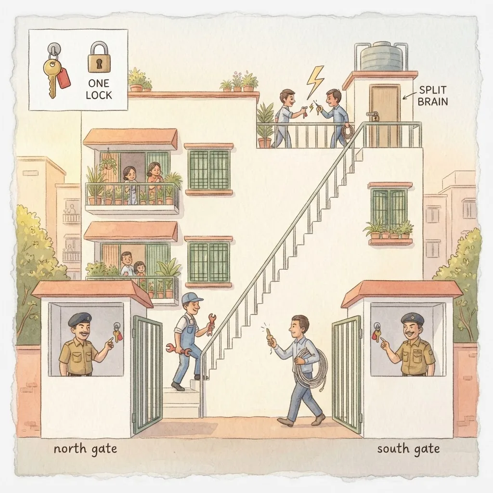
The single key to a society's terrace water-tank room, kept with the watchman. Whoever holds the key is "in charge" today. If two watchmen at two gates each thought the key was still on their hook, two people would get "the" key: that is split brain. Where it breaks: a physical key can't be in two places; a lock in a replicated database can, unless it is linearizable.
Acquiring a lock is a compare-and-set: "if owner is null, set owner = me". If two nodes could each read "null" from different replicas, both succeed. Linearizability forces all cas operations into one real-time order, so exactly one sees null.
Uniqueness constraints are common: a username or email must identify exactly one user; a file storage service can't have two files with the same path and filename. To enforce this as data is written (if two people concurrently create the same name, one gets an error), you need linearizability. It is like a lock: registering a username is like acquiring a "lock" on that name.
Similar issues: a bank balance must never go negative; don't sell more items than are in stock; two people mustn't book the same seat on a flight or in a theatre. All need a single up-to-date value (balance, stock level, seat occupancy) that all nodes agree on.
But in these cases you can sometimes get away without linearizability:
Other constraints, such as foreign key or attribute constraints, can be implemented without linearizability.
| Rule | Strict way (linearizable) | Relaxed way (apologise / compensate) |
|---|---|---|
| Unique username | cas on the name's register; second one fails immediately | both succeed; later email one "please pick another name" |
| Stock ≥ 0 | decrement only if stock > 0, atomically | oversell, reorder, apologise, give discount |
| Balance ≥ 0 | block withdrawal that overdraws | allow it, charge overdraft fee, cap daily withdrawals |
| Seat booked once | atomic seat claim | rebook one passenger, compensate |
Left: each node checks its own possibly stale copy, sees "free", and says yes, so the uniqueness rule is broken. Right: both requests hit one linearizable register with compare-and-set ("set owner to me only if owner is still null"). The first one to take effect wins; the second sees a non-null owner and fails. That is the "lock on a username" the book talks about.
The non-linearizable way out (compensation): let both succeed, notice the clash later (say, a nightly job), and email Rahul: "Sorry, please choose another name." Same idea for a cinema seat sold twice or stock oversold: apologise, refund or offer a discount. It works when a rare apology is cheaper than the coordination.
Names are invented.
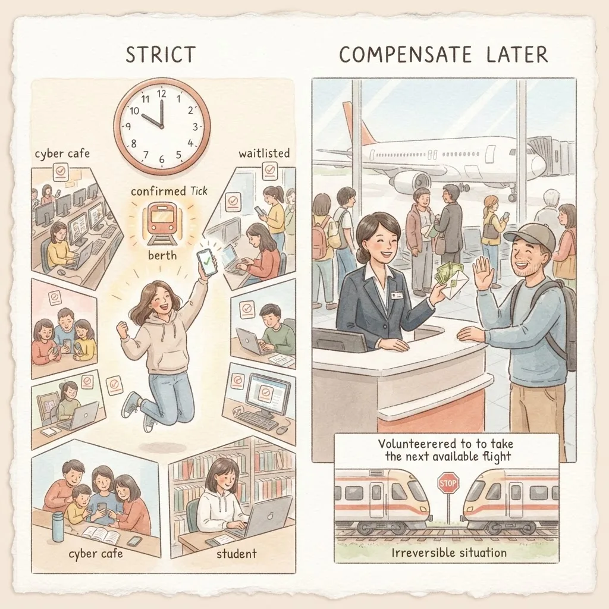
IRCTC Tatkal at 10:00 sharp: one berth left, thousands clicking. A strict system gives the berth to exactly one person; everyone else sees "Waitlisted" immediately. An airline that oversells instead lets everyone book and later offers a volunteer ₹10,000 to take the next flight: the compensating transaction. Where it breaks: some things can't be compensated (two trains on the same track signal), and those truly need the strict way.
A constraint like "at most one" needs one place where the question "is it still free?" gets a single, current answer. Without that, two nodes each check their own (stale) view and both say yes. The business choice is whether the cost of coordination is lower than the cost of occasionally saying sorry.
Notice a detail in Fig 9-1: if Alice hadn't exclaimed the score, Bob would never have known his result was stale. He'd have refreshed a few seconds later and seen the score. The violation was only noticed because there was an additional communication channel (Alice's voice to Bob's ears).
The same happens in computers. Example: users upload a photo; a background process resizes it to a lower-resolution thumbnail for faster download.
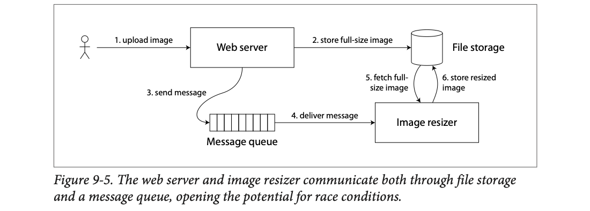
Follow the numbers. 1 upload → 2 web server stores the full-size image in file storage → 3 web server sends a small message to the message queue → 4 queue delivers it to the image resizer → 5 resizer fetches the full image from storage → 6 resizer stores the thumbnail. The web server and resizer talk over two paths: storage (steps 2, 5) and the queue (steps 3, 4).
The resizer must be explicitly told to do a job; that instruction goes through a message queue (Ch.11). The photo itself isn't put on the queue: most brokers are designed for small messages and a photo may be several megabytes. So the photo is written to file storage first, then the instruction is queued.
If file storage is linearizable, this works. If not, there's a race condition: the queue (steps 3, 4) might be faster than storage's internal replication. Then at step 5 the resizer may see an old version of the image, or nothing at all. If it processes an old version, the full-size and resized images become permanently inconsistent.
The cause: two different communication channels between web server and resizer. Without linearizability's recency guarantee, races between channels are possible, just like Fig 9-1 (database replication vs Alice's voice).
Linearizability is not the only fix, but it is the simplest to understand. If you control the extra channel (like the queue here, but not Alice's voice), you can use approaches similar to "Reading your own writes" (Ch.5), at the cost of more complexity.
The image is written to the storage leader at t=0. It reaches the replica the resizer reads from after the replication delay. The queue message reaches the resizer after the queue delay, and the resizer reads immediately.
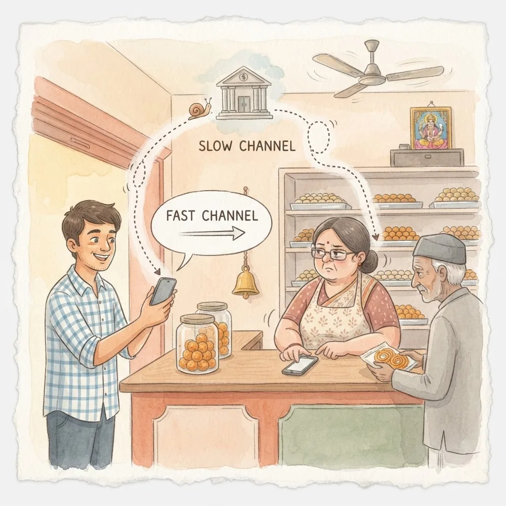
You pay a shopkeeper by UPI and say "Done, check!" (voice channel). His phone hasn't buzzed yet (bank channel), so he says "Not received". Your message beat the bank's update. A friend paying at the same counter with no shout would never notice the delay. Where it breaks: UPI eventually shows the payment; the resizer, once it has made a thumbnail from the old image, never fixes it.
The message on the queue depends on the stored image (causality), but the queue knows nothing about storage's replication progress. Linearizable storage guarantees that once the write is acknowledged (before step 3), every later read sees it, no matter which path told the reader to look.
Linearizability means "behave as though there is a single copy, with atomic operations". The simplest answer: really use a single copy. But that can't tolerate faults: if that node fails, the data is lost (or unavailable until it comes back).
The common way to be fault-tolerant is replication. Can each Ch.5 method be made linearizable?
| Replication method | Linearizable? | Why |
|---|---|---|
| Single-leader | potentially | The leader has the primary copy. Reads from the leader, or from synchronously updated followers, can be linearizable. But not every single-leader DB is, either by design (e.g. it uses snapshot isolation) or because of concurrency bugs. Reading from the leader assumes you know for sure who it is; a node may think it is leader when it isn't ("The truth is defined by the majority", Ch.8). A delusional leader still serving requests likely violates linearizability. With asynchronous replication, failover may lose data, violating both durability and linearizability. |
| Consensus algorithms | yes | Look like single-leader replication, but contain measures to prevent split brain and stale replicas. That's how ZooKeeper and etcd work. |
| Multi-leader | no | Writes processed on several nodes at once and replicated asynchronously, so conflicting writes happen and need resolution (Ch.5 "Handling write conflicts"). |
| Leaderless (Dynamo-style) | probably not | People claim "strong consistency" from quorums (w + r > n). Depending on the configuration and the definition of strong consistency, not quite true. Last-write-wins with time-of-day clocks (e.g. Cassandra) is almost certainly non-linearizable due to clock skew. Sloppy quorums ruin any chance. Even strict quorums can misbehave (next plate). |
Footnote iv. Partitioning (sharding) a single-leader database, with one leader per partition, doesn't affect linearizability, because it is a single-object guarantee. Cross-partition transactions are a different matter (plate 26).
L1 is paused (for example by garbage collection). The others think it is dead and elect L2, which accepts a write x := 7. L1 wakes up, has not heard about the election, and still believes it is the leader. A client that reads from L1 gets the old x = 3, after x = 7 was already confirmed. That breaks linearizability. Consensus systems (row 2 of the table) stop this with epochs and majority votes (plate 42); fencing tokens (Ch.8) stop the old leader's writes.
The scenario follows the book's warning ("a node may think it is leader when it isn't"); the values are invented.
Single-leader replication, reads served by the leader. Times and values are invented.
x = 3 everywhere.x = 7 on L2.A school with one official register kept by the class teacher (leader). Copies go to the office (followers). If you check attendance only in the teacher's register, you get the truth. But if a substitute thinks she's the class teacher and keeps her own register, you now have two "truths". Where it breaks: schools can call the principal to settle it; databases need a protocol (consensus) to do the same.
Linearizability needs one place that orders all operations on an object and one way to find it reliably. Single-leader has the first part but finding "the" leader is itself a consensus problem. Consensus protocols solve both. Multi-leader and leaderless give up the single ordering point on purpose (for availability and latency).
Intuitively, strict quorum reads and writes should be linearizable in a Dynamo-style system. But with variable network delays, races are possible.
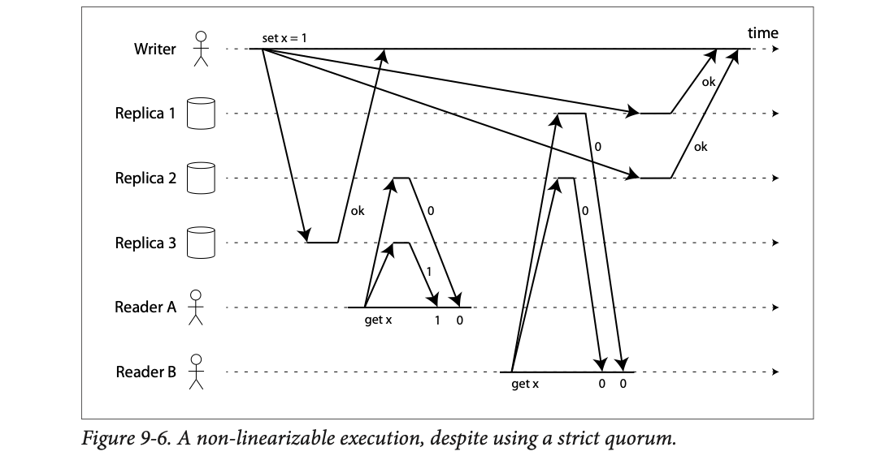
The writer sends set x = 1 to all three replicas. The arrow to Replica 3 is short (arrives fast); arrows to Replicas 1 and 2 are long (arrive late, right side). Reader A asks Replicas 2 and 3: gets 0 and 1, so returns 1 (newest). Afterwards Reader B asks Replicas 1 and 2: both still 0. Only later do 1 and 2 apply the write and send "ok".
x starts at 0. The writer sends x=1 to all 3 replicas (n = 3, w = 3). Concurrently, A reads from a quorum of 2 (r = 2) and sees the new value 1 on one node. Also concurrently, B reads from a different quorum of 2 and gets 0 from both.
The quorum condition holds (w + r > n: 3 + 2 > 3), but this is not linearizable: B's request starts after A's completes, yet B returns the old value while A returned the new one. Alice and Bob again.
Dynamo-style quorums can be made linearizable, at a performance cost: a reader must do read repair synchronously before returning results, and a writer must read the latest state of a quorum before sending its writes. Riak doesn't do this because of the penalty. Cassandra does wait for read repair on quorum reads, but loses linearizability with multiple concurrent writes to the same key, because it uses last-write-wins.
Also, only linearizable read and write can be done this way; a linearizable compare-and-set cannot, because it needs a consensus algorithm.
Summary: it is safest to assume a leaderless Dynamo-style system does not provide linearizability.
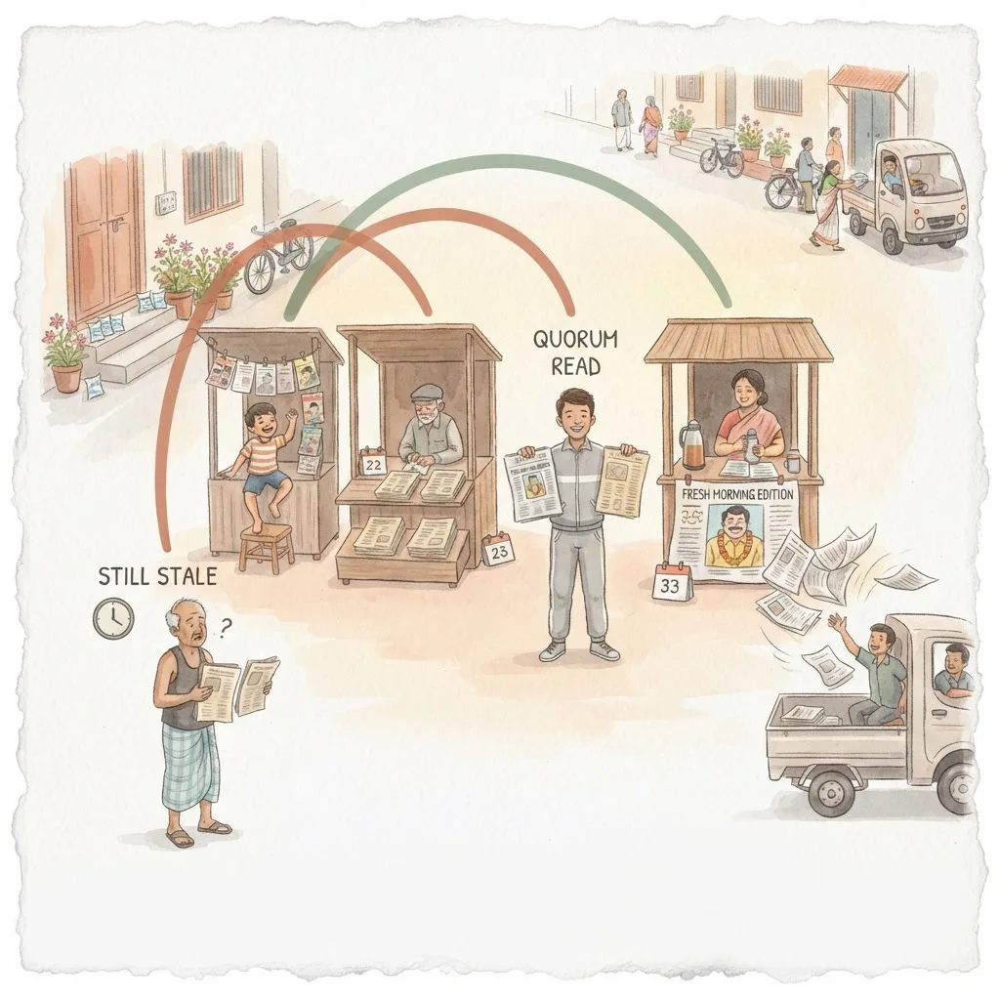
Three newspaper stalls in your colony. The morning edition with the election result reaches stall 3 first. You ask stalls 2 and 3 and see "Result: X won" at stall 3. Your neighbour asks stalls 1 and 2 ten minutes later and both still have yesterday's paper. "Asking two of three" didn't protect him. Where it breaks: a newspaper reader can see the date printed; replicas need version numbers, and even those don't fix the timing race unless reads repair before answering.
The overlap guarantee of w + r > n says "some node in your read quorum has the write" once the write is complete. While the write is still in flight, quorums can see different subsets. Synchronous read repair makes A push 1 to Replica 2 before answering, so any later quorum must include a node with 1.
Some replication methods can be linearizable and others can't, so let's weigh the pros and cons. Ch.5 showed multi-leader replication is often good for multi-datacenter setups:
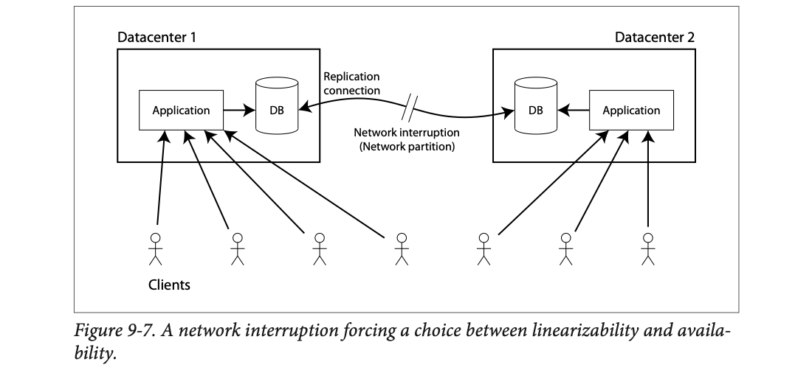
Two boxes = two datacenters, each with an Application and a DB. The curved line between the DBs is the replication connection, broken by "//" = network interruption (network partition). Stick figures at the bottom are clients; four reach Datacenter 1, three reach Datacenter 2. Within each datacenter everything still works.
Suppose the link between datacenters breaks, but each datacenter's internal network works and clients can still reach their datacenter.
Clients who can reach the leader's datacenter are fine. Clients who can only reach a follower datacenter see an outage until the link is repaired.
A bank with its core server in Mumbai and a branch in Guwahati. If the line to Mumbai is down, the Guwahati branch has two choices. It can refuse deposits ("server down, come tomorrow"): consistent but unavailable. Or it can write them in a paper register and sync later: available, but someone might withdraw the same money twice in the meantime. Where it breaks: a branch can phone Mumbai; a partitioned datacenter has no side channel by definition.
To give a linearizable answer, a replica must know it has the latest value, which requires talking to the leader (or a majority). If it can't talk to them, it can't know. So it must either wait/error (unavailable) or answer from what it has (not linearizable). No implementation trick avoids this.
This isn't just about single- vs multi-leader: any linearizable database has this problem, however it is built. And it isn't specific to multi-datacenter setups; it can happen on any unreliable network, even inside one datacenter. The trade-off:
So apps that don't need linearizability tolerate network problems better. This is the CAP theorem, named by Eric Brewer in 2000, though designers of distributed databases knew the trade-off since the 1970s.
Footnote v. The two choices are sometimes called CP (consistent but not available under partitions) and AP (available but not consistent under partitions). This classification has several flaws, so it's best avoided.
CAP was first a rule of thumb without precise definitions, meant to start a discussion. Back then many distributed databases focused on linearizable semantics on a cluster with shared storage. CAP encouraged engineers to explore shared-nothing designs, better for large web services. It deserves credit for that culture shift, witness the explosion of new databases since the mid-2000s (NoSQL).
As formally defined, CAP has very narrow scope: one consistency model (linearizability) and one kind of fault (network partitions: nodes alive but disconnected). It says nothing about network delays, dead nodes, or other trade-offs. So despite its historical influence, it has little practical value for designing systems. There are many more interesting impossibility results, and CAP has been superseded by more precise results; it is of mostly historical interest today.
Footnote vi. This book uses partitioning for deliberately splitting a big dataset (sharding, Ch.6). A network partition is a kind of network fault, which we normally don't treat separately. Since it's the P in CAP, the confusion is unavoidable here.
CAP is often presented as "Consistency, Availability, Partition tolerance: pick 2 out of 3". That is misleading: network partitions are a fault, not something you choose. They happen or they don't.
When the network works, a system can have both consistency (linearizability) and total availability. When a fault occurs, you must choose either linearizability or total availability. A better phrasing: "either Consistent or Available when Partitioned".
There are several contradictory definitions of "availability", and the formal theorem's definition doesn't match the usual meaning. Many "highly available" (fault-tolerant) systems don't meet CAP's idiosyncratic definition. Overall CAP causes misunderstanding and doesn't help understand systems, so it is best avoided.
| Network state | Linearizable? | Available everywhere? |
|---|---|---|
| Working | yes | yes (both at once is fine) |
| Partitioned, choose C | yes | no: cut-off replicas wait or error |
| Partitioned, choose A | no | yes: each side serves its own data |
Picture a ticket-booking site with the leader in datacenter 1. The link to datacenter 2 breaks. A user in DC 2 tries to book. Choice 1: DC 2 says "Sorry, try again later". Nothing wrong is ever shown, but for that user the site is down. Choice 2: DC 2 accepts the booking locally and syncs later. The user is happy now, but if someone in DC 1 booked the same seat, there is a conflict to fix afterwards. Note what is not a choice: whether the cut happens. That is why "pick 2 of 3" is misleading.
The booking scenario is an illustration; the structure (leader in one DC, follower DC cut off, Fig 9-7) is the book's.
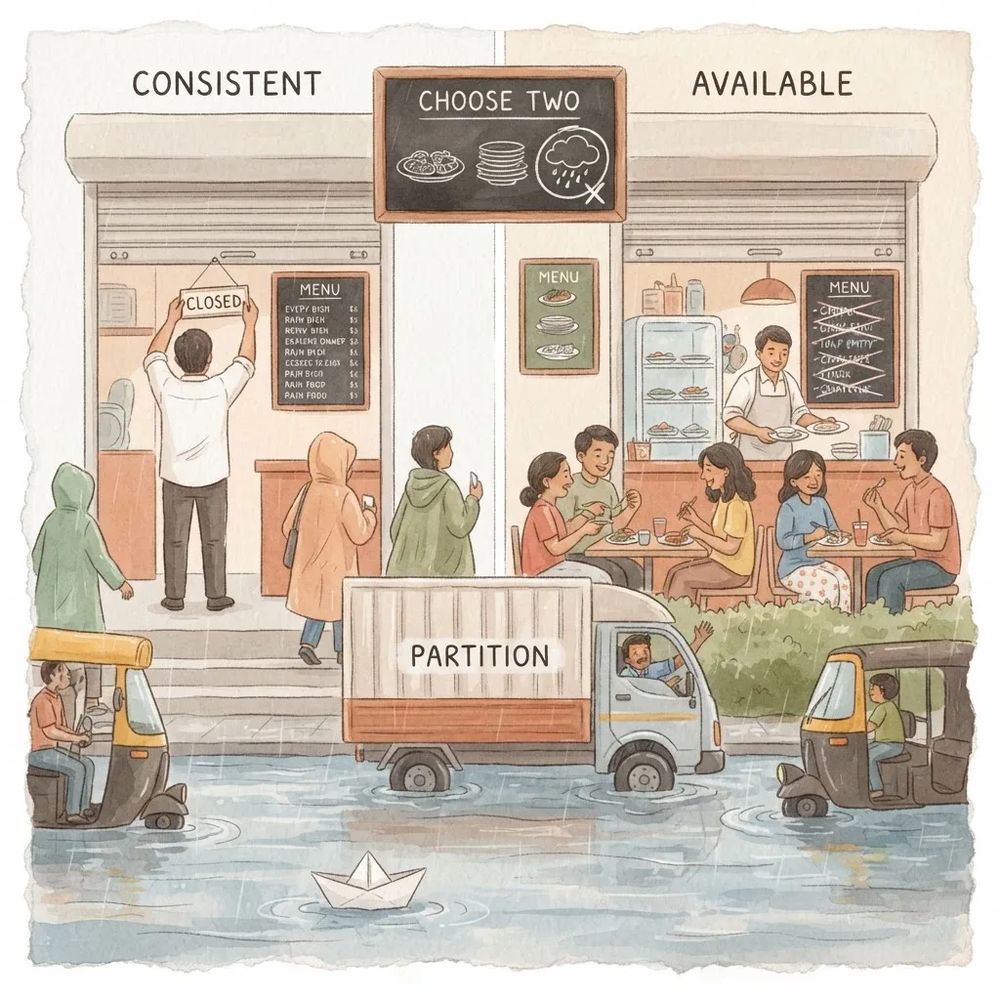
"Pick 2 of 3" is like a restaurant menu saying "Choose two: food, plates, monsoon". You don't choose the monsoon. When it floods and the supply truck can't come (partition), you either close the kitchen (consistent menu, unavailable) or serve whatever is in the fridge (available, menu not as promised). On dry days you serve everything. Where it breaks: real systems face many more faults than floods; CAP only talks about one.
The proof is short: if two replicas can't talk and a write lands on one, a read on the other must either return the old value (not linearizable) or not return (not available). Everything else in CAP's popular version is decoration.
Linearizability is useful, but surprisingly few systems are actually linearizable. Even RAM on a modern multi-core CPU isn't. Say one core writes to a memory address and another core reads it a moment later. The second core is not guaranteed to see the new value, unless the code uses a memory barrier (also called a fence).
Why: each core has its own memory cache and store buffer. Memory access goes to the cache first; changes are written out to main memory asynchronously. Cache access is much faster than main memory, so this is essential for performance. But now there are several copies (main memory plus caches), updated asynchronously, so linearizability is lost.
Why accept that? CAP doesn't explain it: inside one computer we assume reliable communication, and nobody expects a core to keep running normally if disconnected from the rest. The reason for dropping linearizability is performance, not fault tolerance.
The same is true for many distributed databases that skip linearizability: mainly for performance. Linearizability is slow, all the time, not only during a network fault.
Can't we find a faster implementation? Apparently no: Attiya and Welch proved that for linearizability, the response time of reads and writes is at least proportional to the uncertainty of network delays. In networks with highly variable delays (most networks, Ch.8 "Timeouts and unbounded delays"), linearizable reads and writes will inevitably be slow. A faster algorithm doesn't exist, but weaker consistency models can be much faster: an important trade-off for latency-sensitive systems.
Toy model: a linearizable operation must wait at least about the spread between the fastest and slowest network delay (Attiya–Welch says "proportional to", not exactly equal). A weakly consistent read answers from the local replica.
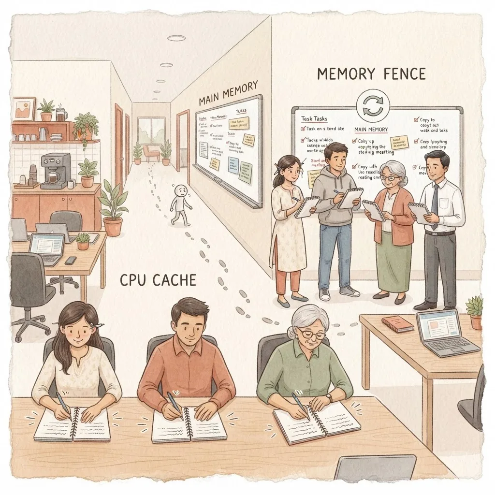
Office staff sharing one whiteboard vs each keeping a personal notebook. Writing on your notebook is instant (CPU cache); walking to the whiteboard every time is slow (main memory). Teams use notebooks and "sync up at stand-up" (memory fence) because it's faster, not because the whiteboard might vanish. Where it breaks: in an office the walk is predictable; network delays are not, which is exactly what makes linearizable latency high.
To be sure a value is the latest, you must hear back from enough of the system, and you can't know how long the slowest relevant message will take. The more uncertain the delays, the longer you must wait to be safe. Weaker models don't wait for that confirmation.
A linearizable register behaves as if there's one copy and every operation takes effect atomically at one point in time. That implies operations run in some well-defined order (the line joining operations in Fig 9-4).
Ordering keeps coming up in this book, which suggests it's a fundamental idea. Recap:
There are deep connections between ordering, linearizability and consensus. This part is more theoretical, but it clarifies what systems can and can't do.
Two clients change the same key x at almost the same moment. Values are invented.
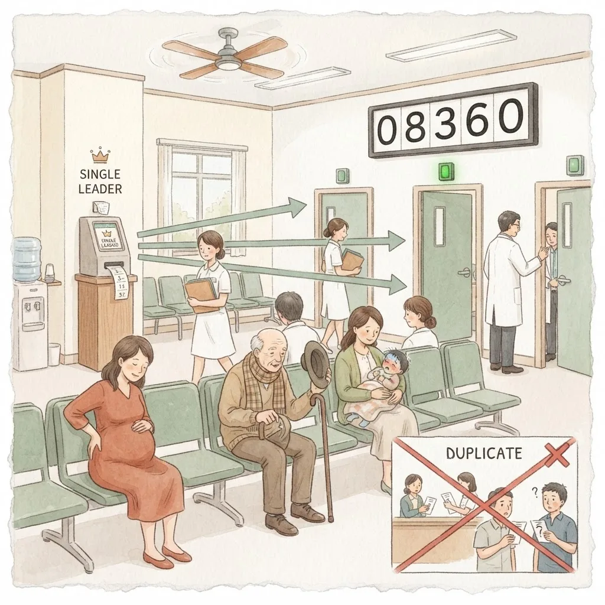
A hospital OPD token system. The token machine (leader) gives the order; doctors (followers) see patients in that order. Without one machine, two receptionists might both give "token 17". Where it breaks: receptionists can shout across the hall; replicas can't trust the network.
Agreeing on an order is agreeing on "what happened first", and that is one decision after another. As later plates show, a system that can agree on an order can do almost any coordination task.
One reason ordering matters: it helps preserve causality (cause and effect). Examples from earlier in the book:
Many of the last 200 pages could be boiled down to three words: "watch your causality!"
Being consistent with causality means obeying the order causality imposes: cause comes before effect; a message is sent before it is received; the question comes before the answer. One thing leads to another: a node reads data and writes something as a result; another node reads that and writes something else. These chains of causally dependent operations define the causal order: what happened before what.
Three writes. B was written by someone who had read A, so A → B (A happened before B). C was written by someone who never saw A or B, so C is concurrent with both. Keys are invented.
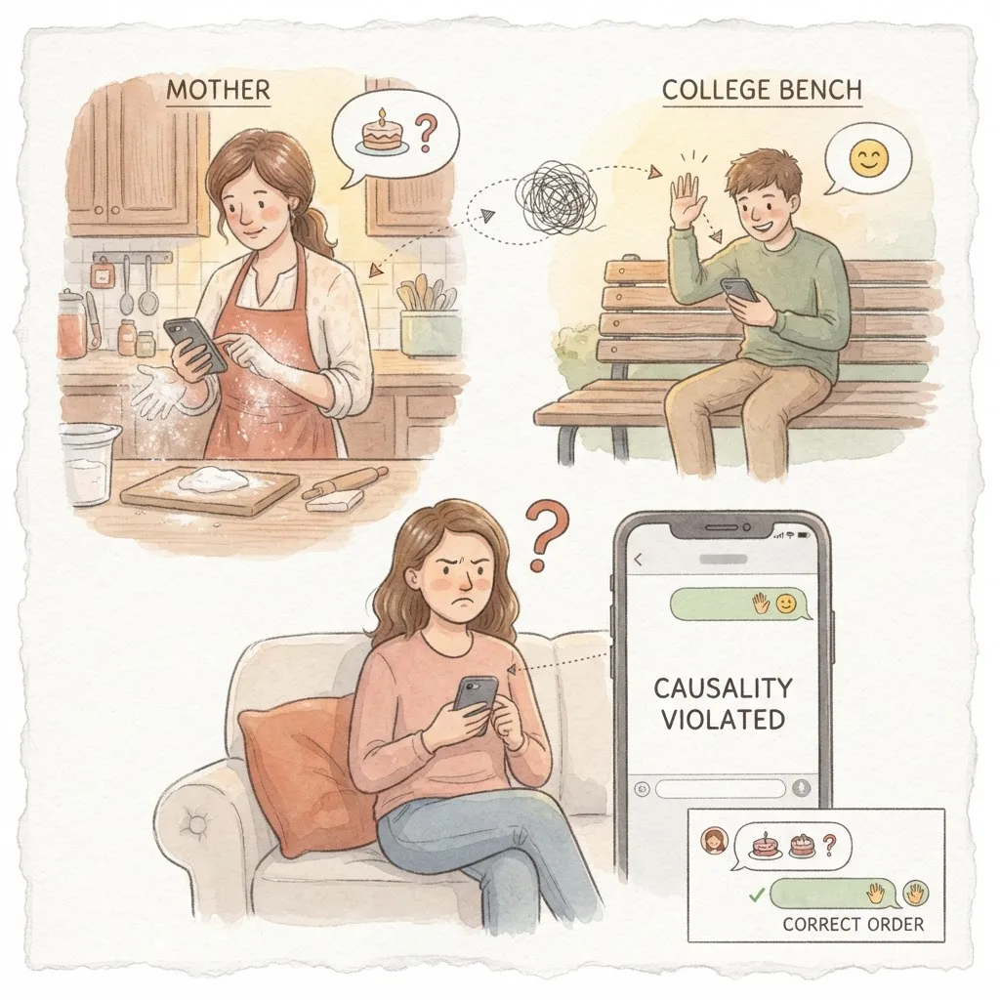
A WhatsApp group where Mom asks "Who's bringing the cake?" and you reply "Me!". If your cousin's phone shows "Me!" before Mom's question, it looks absurd. That's a causality violation. Where it breaks: WhatsApp has one server ordering a chat; a distributed database may have many nodes and no single orderer.
An operation's meaning depends on what its author had seen. If a replica shows an effect without its cause, readers draw wrong conclusions (an update to a missing row, an answer with no question). Preserving causality means: never reveal an operation before everything it depended on.
A total order lets you compare any two elements. Natural numbers are totally ordered: given 5 and 13, 13 is greater.
Mathematical sets are not: is {a, b} greater than {b, c}? Neither is a subset of the other, so they are incomparable. Sets are partially ordered: sometimes one is bigger (contains all elements of the other), sometimes incomparable.
This difference shows up in consistency models:
So by this definition there are no concurrent operations in a linearizable datastore: there's a single timeline with all operations totally ordered. Several requests may be waiting, but each is handled atomically at one point, on one copy, on one timeline, with no concurrency.
Concurrency means the timeline branches and merges; operations on different branches are incomparable. Ch.5's Fig 5-14 is not a straight line but a jumble of concurrent operations; its arrows show causal dependencies, i.e. the partial order.
If you know git: version history is very like a graph of causal dependencies. Often commits follow each other in a straight line, but sometimes there are branches (people working concurrently) and merges combining them.
Linearizability implies causality: any linearizable system preserves causality correctly. In particular, with multiple communication channels (queue + file storage in Fig 9-5), linearizability preserves causality automatically, without anything special like passing timestamps between components.
That's what makes linearizable systems simple and appealing. But linearizability can harm performance and availability, especially with large network delays (e.g. geographically distributed). So many distributed systems abandoned all consistency guarantees: better performance, but hard to work with.
Good news: a middle ground exists. Linearizability isn't the only way to preserve causality. A system can be causally consistent without linearizability's performance hit (and CAP doesn't apply). In fact causal consistency is the strongest possible consistency model that does not slow down due to network delays, and stays available during network failures.
Often systems that seem to need linearizability really only need causal consistency, which is cheaper. Researchers are exploring databases that preserve causality with performance and availability similar to eventually consistent systems. This research is recent; not much has reached production, and challenges remain, but it is a promising direction.
| Model | Order | Slowed by network delays? | Available in a partition? |
|---|---|---|---|
| Linearizable | Total | Yes, always | No (one side must stop) |
| Causal | Partial (cause → effect) | No | Yes |
| Eventual | None promised | No | Yes |
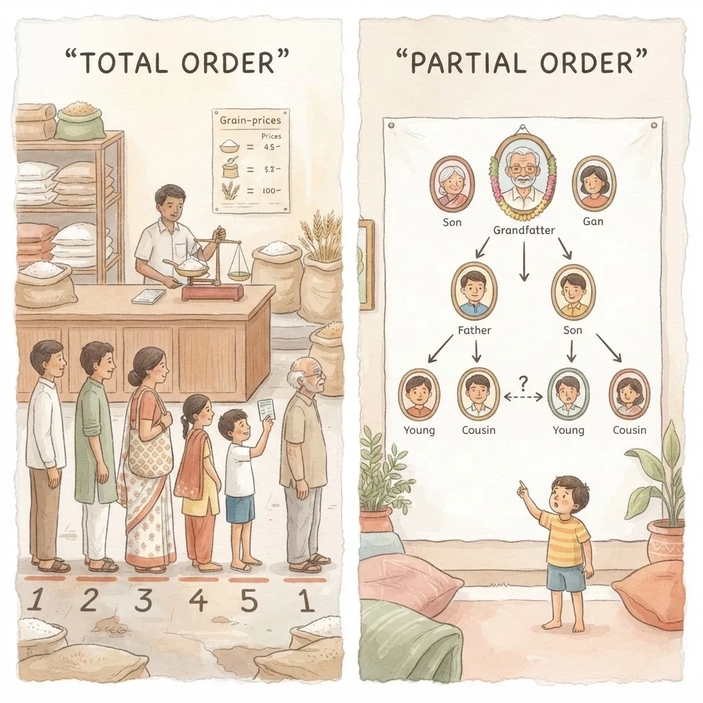
A family tree vs a queue at a ration shop. In the ration queue everyone has a definite position (total order). In a family tree, you can say grandfather comes before father comes before you, but your cousin and you are just "different branches": neither comes before the other (partial order). Where it breaks: family trees never merge branches back into one person; git and databases do (merges).
Causal consistency only waits for things you actually depended on, which are already known to you (you read them). It never needs to ask far-away nodes "anything newer?", so it never waits on network uncertainty. Linearizability must make sure nothing newer exists anywhere, which needs coordination.
(Some editions call this section "Capturing causal dependencies".) The book gives only the key ideas, not all details.
To keep causality you must know which operation happened before which. It's a partial order: concurrent operations may be processed in any order, but if one happened before another, every replica must process them in that order. So a replica processing an operation must make sure all causally preceding operations are already processed; if one is missing, the later one waits.
To find causal links, describe the "knowledge" of a node. If a node had already seen X when it issued write Y, then X and Y may be causally related. It starts to sound like a fraud investigation: "Did the CEO know about X when they made decision Y?"
Techniques are like Ch.5's "Detecting concurrent writes", which detected concurrent writes to one key in a leaderless store to prevent lost updates. Causal consistency goes further: track causality across the whole database, not one key. Version vectors can be generalised to do this.
To know the causal order, the database must know which version of the data the application read. That's why in Fig 5-13 the version number from the prior operation is passed back on a write. SSI (serializable snapshot isolation, Ch.7) has a similar idea. At commit time, the database checks whether the data the transaction read is still the latest version. To do that, it tracks which transaction read which data.
Each write carries a small version vector: how many writes from each node its author had seen. Replica R3 starts at [N1:0, N2:0]. Values are invented.
post 501 = "Shall we book the hall?", stamped [N1:1, N2:0]. It sends it to N2 and R3. The copy to R3 is slow.reply 502 = "Yes, booked!". Because N2 had seen w1, w2 is stamped [N1:1, N2:1]. It sends w2 to R3, and this copy is fast.[0,0]. w2 says its author had seen N1:1, and R3 hasn't. Something w2 depends on is missing, so R3 buffers w2 and does not show it yet.[1,0]. Readers now see the question.[1,1]. A reader of R3 never sees "Yes, booked!" without "Shall we book the hall?". Causality kept. The price: every write carries a vector and replicas track what they have applied.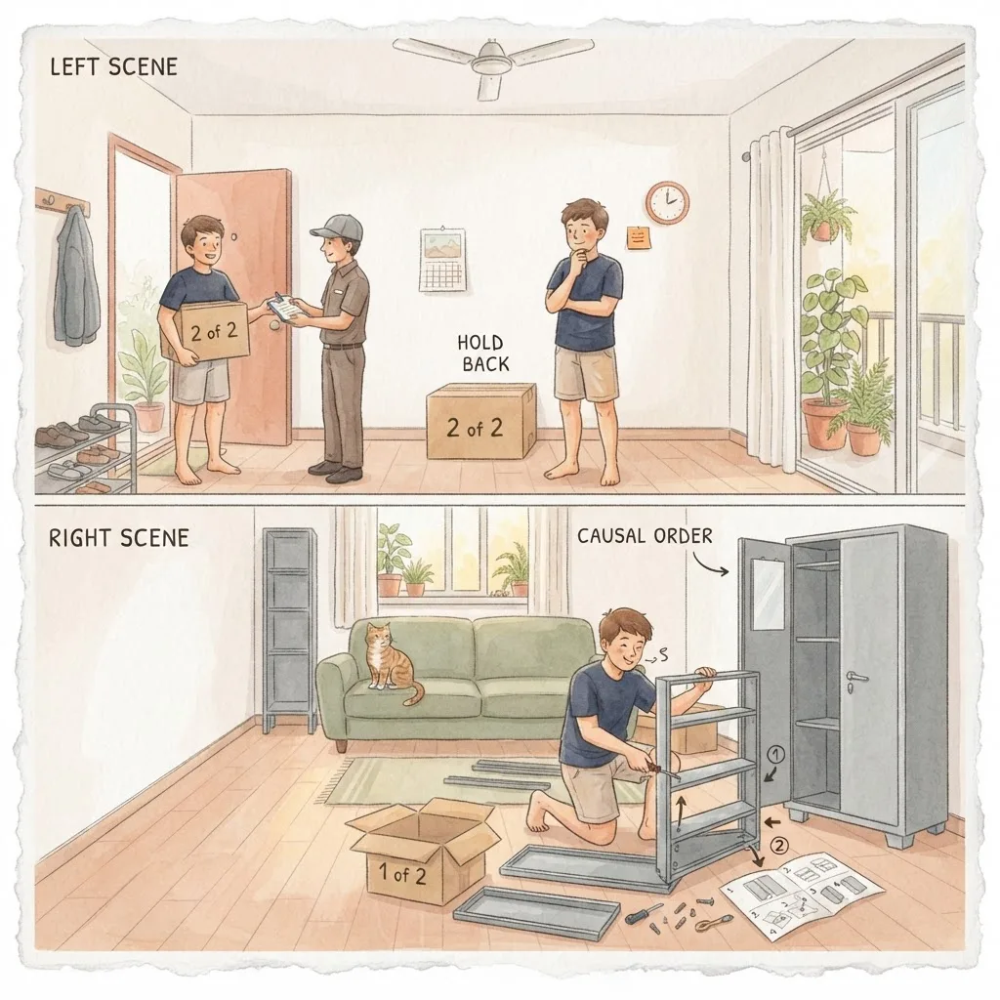
A courier delivers the "Part 2" carton of your new almirah before "Part 1". A sensible person keeps Part 2 aside until Part 1 arrives, then assembles in order. Where it breaks: cartons are labelled "1 of 2"; with database writes you have to record what each write depended on, which can be costly.
Each write carries a summary of what its author had seen (like a version vector). A replica compares that with what it has applied; if anything is missing, it delays the write. The cost is the size and bookkeeping of those summaries.
Tracking all causal dependencies can be impractical. Clients often read lots of data before writing, and it's unclear whether the write depends on all or only some of those reads. Tracking everything read means large overhead.
Better: use sequence numbers or timestamps. A timestamp needn't come from a time-of-day (physical) clock, which has many problems (Ch.8). It can come from a logical clock: an algorithm that generates numbers to identify operations, typically counters incremented per operation.
These numbers are compact (a few bytes) and give a total order: every operation has a unique number and any two can be compared.
In particular we can create a total order consistent with causality: if A causally happened before B, A gets a lower number. Concurrent operations may be ordered arbitrarily. This captures all causal information but imposes more ordering than causality strictly needs.
Footnote vii. A total order inconsistent with causality is easy but useless. Example: a random UUID per operation, compared lexicographically. Valid total order, but tells you nothing about what actually happened first or whether operations were concurrent.
With single-leader replication, the replication log gives a total order of writes consistent with causality. The leader just increments a counter per operation, giving a monotonically increasing sequence number. A follower applying writes in log order is always causally consistent (even if lagging).
Without a single leader (multi-leader, leaderless, or a partitioned database), methods used in practice:
These perform better and scale better than pushing everything through one leader. They give unique, approximately increasing numbers. But they all have a problem: not consistent with causality, because they don't track order across nodes:
Footnote viii. Physical timestamps can be made causal: Google's Spanner (Ch.8 "Synchronized clocks for global snapshots") estimates how far apart the clocks may be. Before committing, it waits out that uncertainty interval. So a causally later transaction always gets a greater timestamp. Most clocks can't provide the needed uncertainty metric.
Story: a user writes on Node A ("post photo"), then, having seen it, writes on Node B ("comment on photo"). The comment is causally later. Which number does each get?
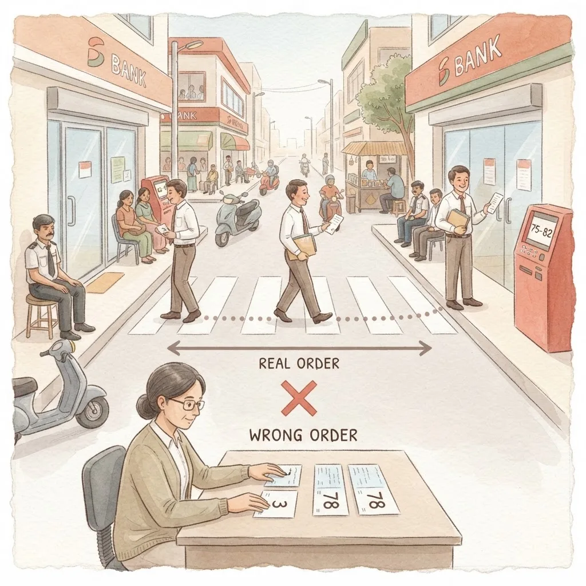
Two bank branches issuing token numbers: Branch A uses 1–1000, Branch B uses 1001–2000. You take token 1005 at Branch B, then walk to Branch A and take token 7 for a follow-up. Sorting tokens says the follow-up (7) came "before" the first visit (1005). Where it breaks: tokens are only for queues; here we pretend they record history, which they can't across branches.
Each generator only knows its own counter. Nothing in the protocol tells Node A "the user already saw 1005, so you must go above it". The fix (next plate) is exactly that: carry the highest number you've seen along with every request.
A simple method that is consistent with causality: the Lamport timestamp, proposed in 1978 by Leslie Lamport, in one of the most-cited papers in distributed systems.
Each node has a unique identifier and keeps a counter of operations processed. The Lamport timestamp is the pair (counter, node ID). Two nodes may have the same counter, but adding the node ID makes each timestamp unique.
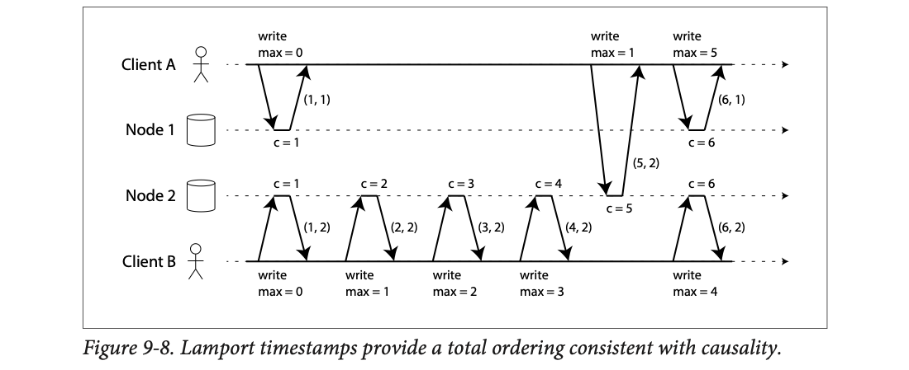
Each "write max = k" is a client sending the largest counter it has seen. Each node shows its counter c after the write and replies with (c, nodeID). Client B talks to Node 2 four times: (1,2) (2,2) (3,2) (4,2). Client A first writes to Node 1: (1,1). Then A writes to Node 2 with max=1; Node 2 is at 4, so it goes to 5 → (5,2). Now A's max is 5. A writes to Node 1 with max=5; Node 1 was at c=1, jumps to 5, increments → (6,1). Finally B writes to Node 2 with max=4; Node 2 is at 5 → (6,2).
Comparing: greater counter wins; if counters tie, greater node ID wins. It bears no relation to a physical clock but gives a total order.
So far that's like the odd/even counters. The key idea that makes it causal: every node and every client tracks the maximum counter it has seen, and includes that maximum on every request. When a node receives a maximum greater than its own counter, it immediately raises its own counter to that maximum.
In Fig 9-8: client A got 5 from node 2, then sent max 5 to node 1. Node 1 was at 1, moved to 5, and the next operation got 6.
As long as the maximum travels with every operation, the ordering is consistent with causality, because every causal dependency results in an increased timestamp.
Not to be confused with version vectors (Ch.5). Similar, but with a different purpose. Version vectors can tell whether two operations are concurrent or causally dependent. Lamport timestamps always force a total order. From that order you can't tell whether two operations were concurrent or dependent.
Click to send a write from a client to a node. The client sends its max; the node does c = max(c, clientMax) + 1 and replies (c, nodeID); the client updates its max. "Replay Fig 9-8" runs the book's exact sequence.
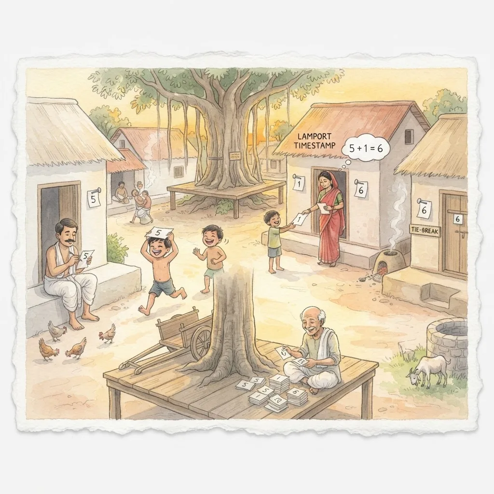
Village gossip with numbered notes. Every note you write gets a number one higher than the highest number you've ever seen. If Ramesh's note #5 reaches you while you're at #1, your next note is #6, so anyone sorting notes sees yours after the one you reacted to. Where it breaks: two notes both numbered 6 written in different houses with no contact are put in order by house number, not by real time; the order is fair but not "true".
If B depends on A, then B's author saw A's counter, so B's counter is at least A's + 1. Hence cause always gets a smaller number than effect. The converse is not true: a smaller number doesn't prove a cause, which is why Lamport timestamps can't detect concurrency.
Lamport timestamps give a total order consistent with causality, but that's not enough for many common problems.
Example: a username must uniquely identify an account. If two users concurrently create the same username, one should succeed and one fail (touched on in Ch.8 "The leader and the lock").
At first glance a total order seems enough: pick the one with the lower timestamp as winner, the higher fails. Timestamps are totally ordered, so the comparison always works.
That works for deciding the winner after the fact, once you have collected all username-creation operations. It does not work when a node has just received a request and must decide right now. At that moment the node doesn't know whether another node is concurrently creating the same name, or what timestamp it will assign.
To be sure, you'd have to check with every other node. If one has failed or is unreachable, the system grinds to a halt. Not the fault-tolerant system we want.
The problem: the total order only emerges after you've collected all operations. Unknown operations from another node might need to be inserted at various positions.
Conclusion: for a uniqueness constraint, a total order isn't enough; you also need to know when that order is finalized. If you're sure no other node can insert a claim for the same username ahead of yours, you can safely declare success. This idea is captured by total order broadcast.
Two users try to register @dhanesh on two different nodes at the same moment. Lamport timestamps are written (counter, nodeID). Values are invented.
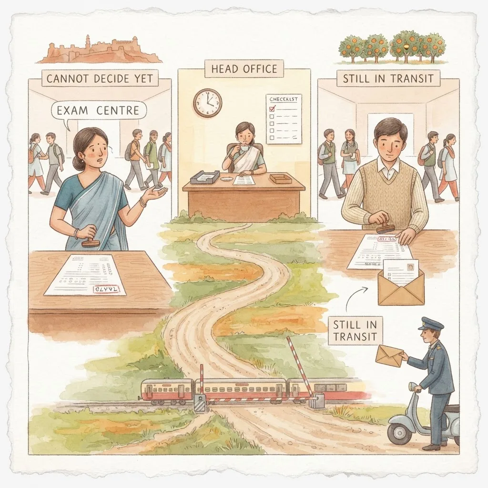
Two exam centres in different cities both stamp entry times on answer sheets. "Earliest sheet wins the prize" works only after all sheets have reached the head office. The invigilator in Pune can't announce "You win!" on the spot, because a Nagpur sheet with an earlier stamp may still be in the post. Where it breaks: the head office eventually gets all sheets; a crashed node may never report.
A timestamp tells you where an operation belongs in the order, not whether anything else will still be inserted before it. Deciding "now" needs a cut-off: "nothing more can come before position k". Total order broadcast delivers messages in a fixed order, so once your message is delivered, the prefix before it is final.
On a single CPU core, the total order is just the order the CPU executed things. In a distributed system, getting all nodes to agree on the same total order is tricky. Timestamps/sequence numbers aren't as powerful as single-leader replication (can't do uniqueness).
Single-leader replication gets a total order by choosing one leader and sequencing all operations on one CPU core on the leader. The challenges: scaling beyond what one leader can handle, and failover if the leader fails. In the literature this problem is total order broadcast or atomic broadcast.
Footnote ix. "Atomic broadcast" is traditional but confusing: it has nothing to do with ACID atomicity and only indirectly relates to atomic operations (multithreading) or atomic registers (linearizable storage). Total order multicast is another synonym.
Partitioned databases with one leader per partition often keep ordering only per partition, so they can't offer consistency guarantees (e.g. consistent snapshots, foreign key references) across partitions. Total ordering across all partitions is possible but needs extra coordination.
Total order broadcast is usually described as a protocol for exchanging messages between nodes. It requires two properties, always:
A correct algorithm keeps both properties even if nodes or the network are faulty. Messages won't be delivered while the network is down, but the algorithm keeps retrying, and when the network is repaired they must still be delivered in the correct order.
Messages m1, m2, m3 are sent by different nodes. Every node must receive all of them in the same order. Message contents are invented.
seat 14C → Asha). The broadcast layer puts it at slot 1 and delivers it to everyone.seat 14D → Ravi) and A sends m3 (seat 14C → Bilal). They get slots 2 and 3. A and B receive both. C receives nothing.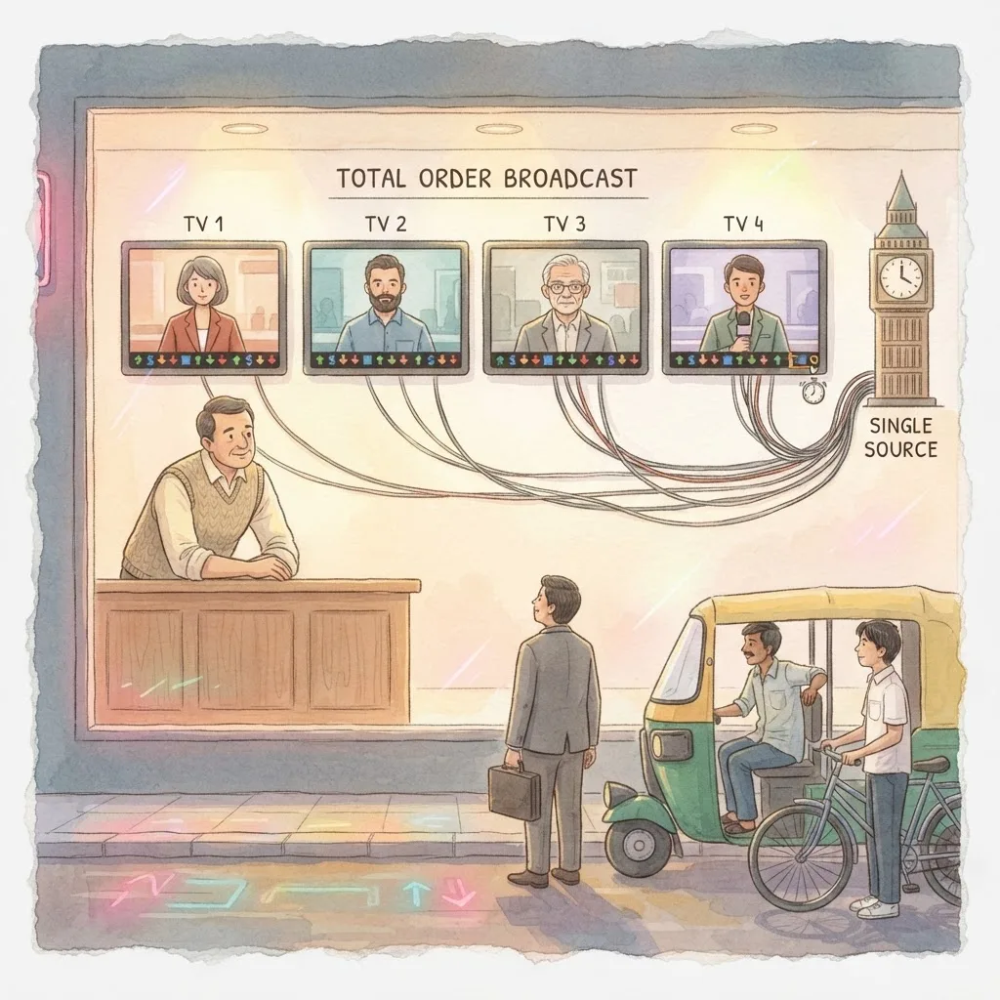
The Sensex ticker on every TV channel. All channels show the same sequence of trades in the same order; a channel with a slow feed may be a few seconds behind, but never shows trades in a different order or skips one. Where it breaks: a ticker has one source (the exchange); total order broadcast must keep working when that source (the leader) dies.
It's equivalent to an append-only log that every node reads. Reliable + ordered delivery means every node's copy of the log is a prefix of the same sequence. The hard part is choosing who appends next without a single point of failure: that's consensus.
Consensus services like ZooKeeper and etcd actually implement total order broadcast: a hint of a strong link between total order broadcast and consensus.
Uses:
Key point: the order is fixed at delivery time. A node can't retroactively insert a message at an earlier position once later messages were delivered. That makes total order broadcast stronger than timestamp ordering.
Each replica starts with nothing and applies the log entries in order. Because the operations are deterministic (no randomness, no reading the clock), the same list in the same order gives the same result everywhere: x = 30. Swap two entries and you get 12 instead: that is why the order must be identical on every node, which is exactly what total order broadcast guarantees.
Fencing tokens from the same log: lock requests are log entries too. If "A wants the lock" lands at position 33 and "B wants the lock" at 34, the tokens are 33 and 34. Storage that has seen token 34 can reject anything still carrying 33. ZooKeeper calls this number the zxid.
Values and log positions are invented.
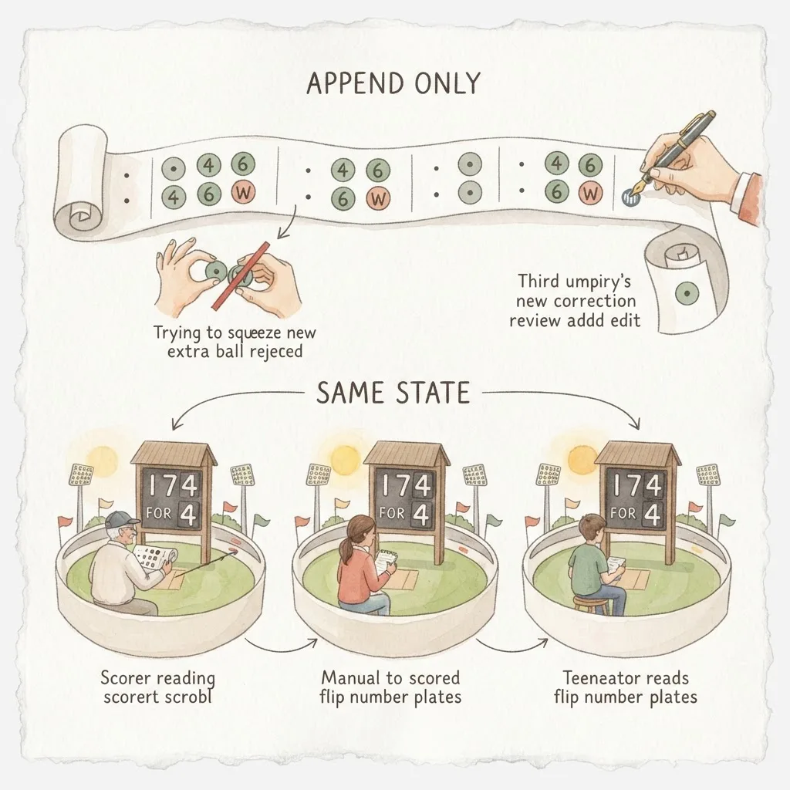
A cricket ball-by-ball commentary log. Once ball 14.3 is announced, nobody can insert a "missed ball" at 14.1. Every scorer in every stadium replays the same balls in the same order and arrives at the same score (state machine replication). Where it breaks: umpires can review and overturn; the log never rewrites the past, a correction is a new entry.
Deterministic processing + identical input order = identical state. That's why "agree on the order of a log" is the core of replication. Fixing the order at delivery gives every node a safe point: anything before is final.
Linearizable systems have a total order of operations (Fig 9-4). Is linearizability the same as total order broadcast? Not quite, but they're closely linked.
Footnote x. Formally, a linearizable read/write register is an "easier" problem. Total order broadcast is equivalent to consensus, which has no deterministic solution in the asynchronous crash-stop model, whereas a linearizable read/write register can be implemented in that model. But adding atomic operations like compare-and-set or increment-and-get makes a register equivalent to consensus. In practice the two problems are rather similar.
Total order broadcast is asynchronous: messages arrive reliably in a fixed order, but there's no guarantee when (one recipient may lag). Linearizability is a recency guarantee: a read sees the latest value.
But you can build linearizable storage on top of total order broadcast. Example: unique usernames. Imagine a linearizable register per possible username with atomic compare-and-set. Each starts as null (not taken). To create a username, do cas on its register: set to the user account ID if previous value is null. If several users try concurrently, only one cas succeeds; the others see non-null.
Implementing that linearizable cas with total order broadcast as an append-only log:
Footnote xi. If you don't wait and acknowledge right after enqueuing, you get something like the consistency model of multi-core x86 processors, which is neither linearizable nor sequentially consistent.
Log entries arrive at all nodes in the same order, so with concurrent writes all nodes agree which came first. Choosing the first as winner and aborting the rest means all nodes agree on committed vs aborted. A similar approach gives serializable multi-object transactions on top of a log.
This gives linearizable writes but not linearizable reads: reading from a store asynchronously updated from the log may be stale. (Precisely, the procedure gives sequential consistency, also called timeline consistency, slightly weaker than linearizability.) To make reads linearizable:
Alice (on node 1) and Bob (on node 2) both want "dhanesh". Append their claims in any order, then deliver. The first delivered claim wins on every node.
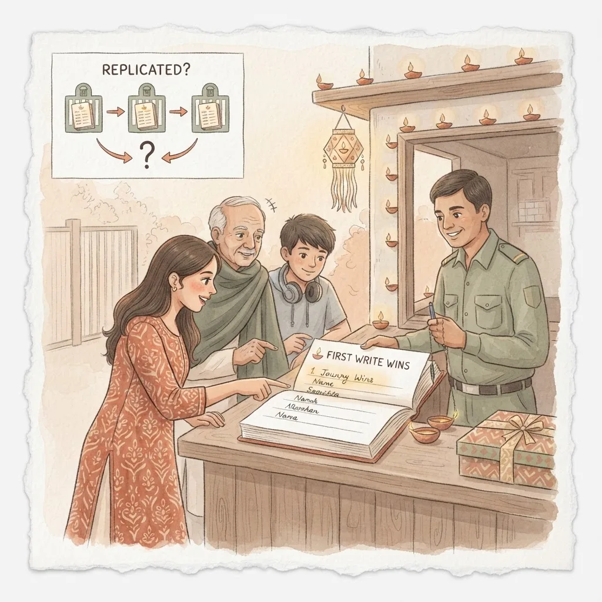
A housing society's single register book at the gate for booking the clubhouse on Diwali. You don't just write your name; you write it, then look at the book: if the first line for "Diwali, clubhouse" is yours, it's yours. If someone wrote above you, you lose, and everybody looking at the same book agrees. Where it breaks: there's one physical book; in a distributed system the "book" is replicated, and making all copies get lines in the same order is the hard part (consensus).
The log turns "concurrent" into "ordered" by fiat. Waiting for your own message to come back guarantees you've seen everything ordered before it, so your decision is based on a final prefix. That's exactly the "know when the order is finalized" ingredient timestamps lacked.
Now the reverse: assume linearizable storage, build total order broadcast.
Easiest: a linearizable register storing an integer with atomic increment-and-get (compare-and-set would also work). For every message: increment-and-get the integer, attach the value as a sequence number, send the message to all nodes (re-sending lost ones), and recipients deliver messages consecutively by sequence number.
Unlike Lamport timestamps, these numbers have no gaps. If a node delivered message 4 and receives 6, it knows it must wait for 5 before delivering 6. Lamport timestamps can't tell you that: this is the key difference between total order broadcast and timestamp ordering.
How hard is a linearizable integer with increment-and-get? If nothing failed, easy: keep it in a variable on one node. The problem is handling network interruptions to that node and restoring the value when the node fails. In general, if you think hard enough about linearizable sequence number generators, you inevitably end up with a consensus algorithm.
No coincidence: it can be proved that a linearizable compare-and-set (or increment-and-get) register and total order broadcast are both equivalent to consensus. Solve one, and you can transform it into a solution for the others. A profound and surprising insight. Time to tackle consensus head-on.
Messages numbered by increment-and-get arrive in a scrambled network order: 1, 2, 4, 6, 3, 5. The node only delivers the next number in sequence and buffers the rest.
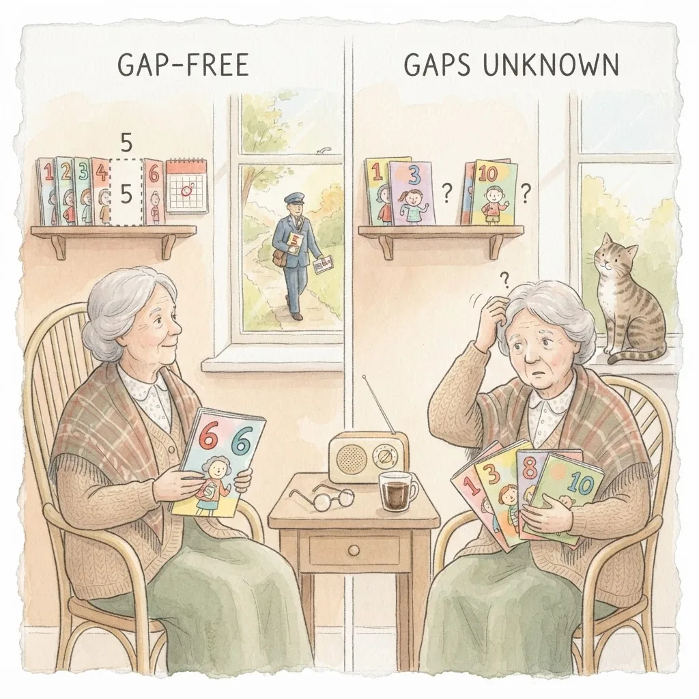
Chapters of a serialised novel in a weekly magazine numbered 1, 2, 3… If issue 6 reaches you before 5, you know 5 exists and wait. With Lamport-style numbers (12, 17, 31…) you could never be sure whether something sits between 17 and 31. Where it breaks: the magazine has one editor numbering chapters; keeping a single gap-free counter alive through crashes is the whole consensus problem.
Gap-free means "the set of earlier messages is exactly {1 … k-1}", so a receiver can tell when its prefix is complete. A linearizable counter gives that, but making the counter itself survive node failure needs replicas to agree on each increment: consensus.
Consensus is one of the most important and fundamental problems in distributed computing. Informally: get several nodes to agree on something. Sounds easy, but many broken systems were built believing it was.
It appears this late because it is subtle and needs background: replication (Ch.5), transactions (Ch.7), system models (Ch.8), linearizability and total order broadcast (this chapter). Even researchers understood it only gradually over decades, with many misunderstandings.
Situations where nodes must agree:
Footnote xii. Atomic commit is formalised slightly differently: a transaction can commit only if all participants vote to commit, and must abort if any needs to. Consensus may decide any value proposed by a participant. But atomic commit and consensus are reducible to each other. Non-blocking atomic commit is harder than consensus (plate 32).
Plan: first atomic commit and two-phase commit (2PC), the most common solution, implemented in databases, messaging systems and application servers. 2PC turns out to be a kind of consensus algorithm, but not a very good one. Learning from it, we move to better algorithms, like those in ZooKeeper (Zab) and etcd (Raft).
One transaction touches two nodes. Only the top two outcomes are acceptable. The bottom two happen if each node decides alone (one hits a constraint, one loses the commit message, one crashes). Making all participants reach the same decision is the atomic commit problem, and it is a form of consensus.
The amounts are invented; the "all commit or all abort" rule is the book's.
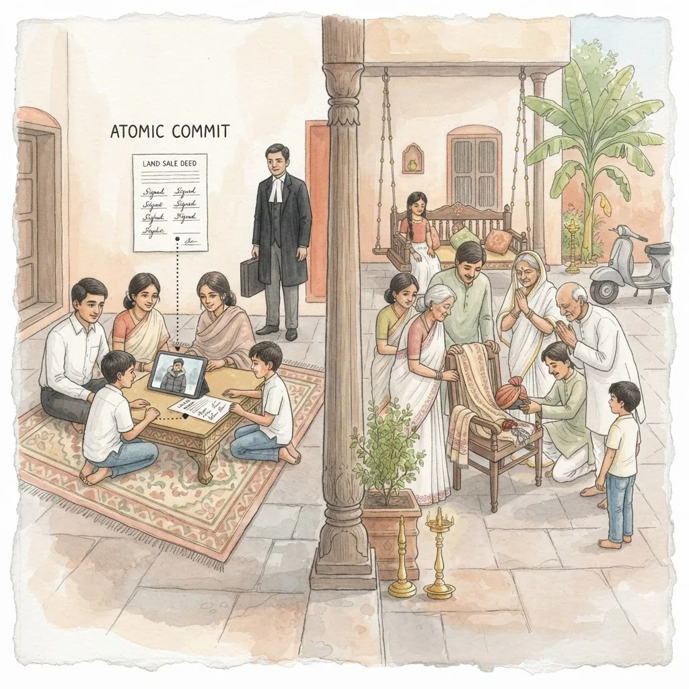
A joint family deciding whether to sell ancestral land. Every sibling must sign or the sale is off (atomic commit). Separately, the family must agree on who is the karta (head) this year (leader election). Where it breaks: families can wait for the sibling abroad to return; a production database can't wait forever.
Both problems are "many parties, one irreversible decision, any party may be slow or dead". The difference is the decision rule: atomic commit needs unanimity on "yes", consensus accepts any proposed value with a majority.
The FLP result (Fischer, Lynch, Paterson) proves there's no algorithm that reliably reaches consensus if a node may crash. Nodes may crash in any distributed system, so consensus is impossible. Yet here we are discussing consensus algorithms. What gives?
FLP is proved in a very restrictive model: a deterministic algorithm that can't use any clocks or timeouts. If the algorithm may use timeouts or another way to suspect nodes have crashed (even if the suspicion is sometimes wrong), consensus becomes solvable. Even allowing random numbers is enough.
So FLP is of great theoretical importance, but in practice distributed systems can usually achieve consensus.
| What the algorithm may use | Consensus with a possible crash? |
|---|---|
| Deterministic, no clocks, no timeouts (FLP model) | impossible |
| Timeouts / crash suspicion (sometimes wrong) | solvable |
| Random numbers | solvable |
That is the heart of FLP. If an algorithm may not use time at all, a crashed node and a very slow one are indistinguishable, and there is always some schedule that keeps the algorithm undecided forever. Allow a timeout ("after 5 s, suspect B") or a coin flip, and the trap disappears in practice. That is what real consensus systems do: they rely on timeouts to detect failed nodes (plate 43).
"5 s" is an invented number.
Friends deciding a movie on a group call where nobody owns a watch and anyone might silently drop. You can never be sure whether Ravi is thinking or has left, so you can't safely close the vote. Give everyone a rule "if no reply in 2 minutes, assume he left" (a timeout) and the group can decide, even if sometimes Ravi was just slow. Where it breaks: wrongly assuming Ravi left must never cause two different movies to be chosen; real algorithms ensure that safety separately.
Without timing, a slow node and a dead node look identical forever, so the algorithm can always be kept undecided by an adversarial schedule. Timeouts break the tie; algorithms are designed so wrong suspicions only cost speed (more elections), never correctness.
Recall (Ch.7): transaction atomicity gives simple semantics when something fails halfway through several writes. The outcome is either commit (all writes durable) or abort (all writes rolled back, undone or discarded).
Atomicity stops failed transactions from littering the database with half-finished state. Especially important for multi-object transactions and databases with secondary indexes: each index is a separate structure, so a data change must also be made in the index. Atomicity keeps the index consistent with the primary data (an inconsistent index isn't useful).
On one node, the storage engine implements atomicity. On commit, the database makes the writes durable (usually in a write-ahead log) and then appends a commit record to the log on disk. If it crashes midway, on restart: if the commit record reached disk, the transaction is committed; if not, its writes are rolled back.
So commit depends on the order of durable writes: first the data, then the commit record. The deciding moment is when the disk finishes writing the commit record: before it, abort is still possible (due to a crash); after it, committed (even if the database crashes). A single device (the controller of one disk, on one node) makes the commit atomic.
What if several nodes are involved? E.g. a multi-object transaction in a partitioned database, or a term-partitioned secondary index (index entry on another node than the data, Ch.6). Most "NoSQL" stores don't support such distributed transactions, but various clustered relational systems do.
It is not enough to send a commit request to every node and let each commit independently. It could succeed on some and fail on others:
If some commit and others abort, nodes become inconsistent (like Fig 7-3). And a commit on one node can't be retracted if it later turns out another node aborted.
Once committed, data becomes visible to other transactions, and other clients may start relying on it. So a commit must be irrevocable: no changing your mind and retroactively aborting. This is the basis of read committed isolation. (A compensating transaction can later undo the effects, but from the database's view it's a separate transaction; cross-transaction correctness is the application's problem.)
Pick what goes wrong on Node 2 while Node 1 commits fine.
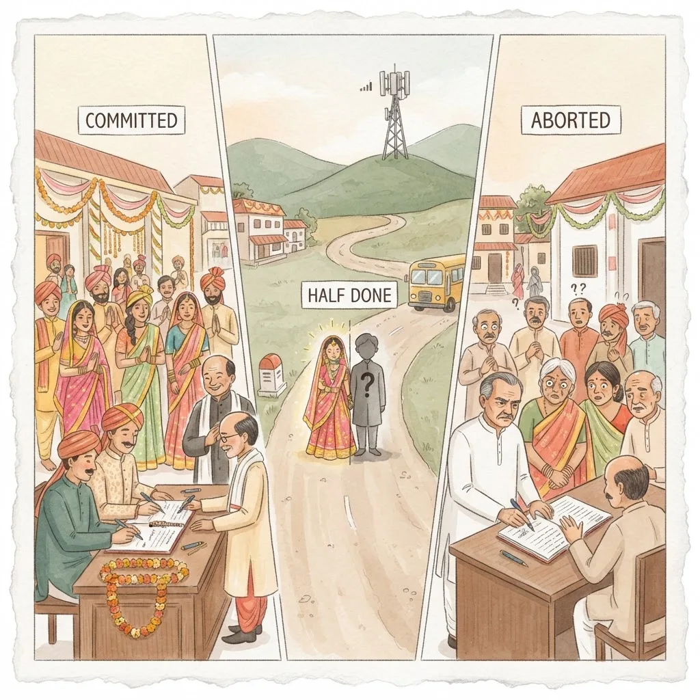
A wedding where the bride's side and groom's side each sign the register in different towns, without checking with each other. If the groom's side signs and the bride's side refuses, you have a half-marriage. Where it breaks: a signature can be torn up; a committed transaction that others have already read can't really be un-seen.
On one node, a single atomic disk write is the decision point. Across nodes there is no single disk. 2PC recreates a single decision point (the coordinator's log) and makes every participant promise beforehand that it can obey it.
Two-phase commit (2PC) is an algorithm for atomic commit across multiple nodes: all commit or all abort. A classic in distributed databases. Used internally in some databases and exposed to applications as XA transactions (supported e.g. by the Java Transaction API) or WS-AtomicTransaction for SOAP web services.
Two-phase commit (2PC) and two-phase locking (2PL) are very different. 2PC gives atomic commit in a distributed database; 2PL gives serializable isolation. Think of them as entirely separate; ignore the unfortunate similar names.
Instead of one commit request, the commit/abort is split into two phases:
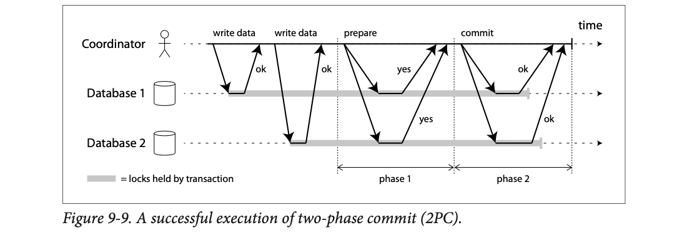
Top line = coordinator; below, Database 1 and 2. First, normal work: "write data" to each, replies ok. Phase 1: "prepare" to both, both answer "yes". Phase 2: "commit" to both, both answer "ok". The grey bars are locks held by the transaction: from each database's first write until it commits. Notice how long they last.
2PC adds a component single-node transactions don't have: a coordinator (also called transaction manager). Often a library inside the application process requesting the transaction (e.g. embedded in a Java EE container), but it can be a separate process/service. Examples: Narayana, JOTM, BTM, MSDTC.
The application reads and writes data on several database nodes as usual; these nodes are the participants. When ready to commit, the coordinator starts phase 1: it sends a prepare request to each node, asking if it can commit. Then:
Like a traditional western wedding: the minister asks bride and groom individually whether they want to marry, usually hears "I do" from each, then pronounces them married: the transaction commits and the happy fact is broadcast to all attendees. If either says no, the ceremony is aborted.
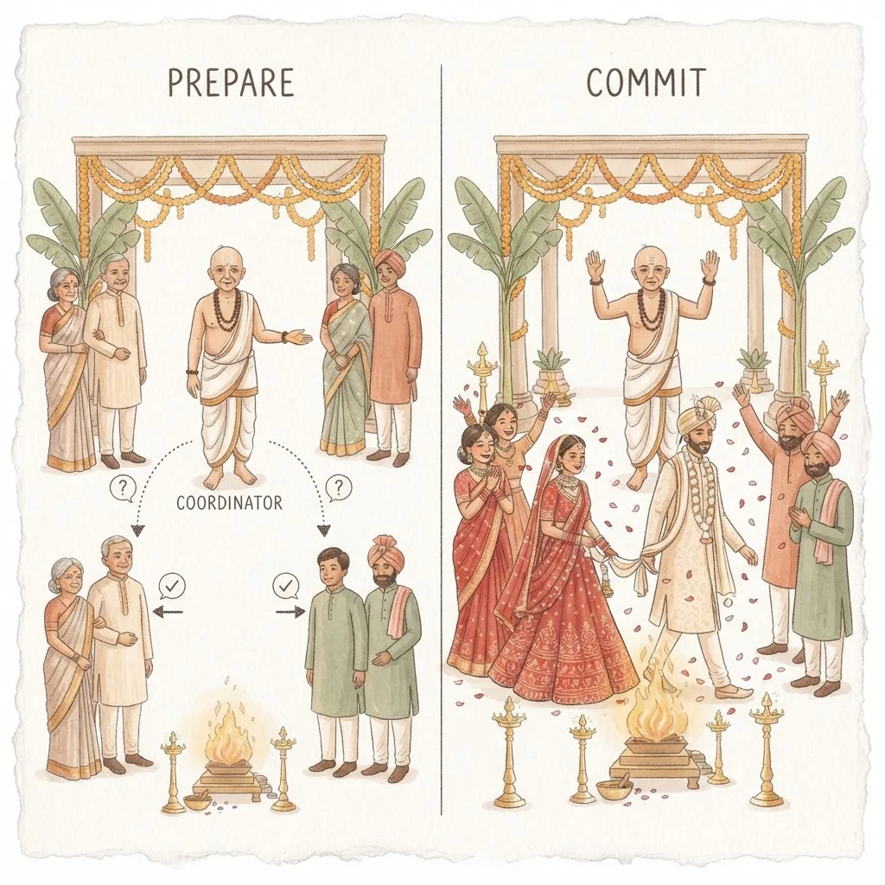
A Hindu wedding needs both families' consent before the pandit starts the pheras. Phase 1: the pandit asks each side "ready?" Phase 2: once both say yes, he proceeds and announces it to everyone. Where it breaks: in a wedding everyone is in the same hall; in 2PC the pandit (coordinator) can vanish mid-ceremony (plate 31).
Splitting commit in two separates "can you?" from "do it". The coordinator only says "do it" when everyone has guaranteed they can. That removes the "some commit, some fail" outcomes of plate 28, at the price of extra round trips and locks held longer.
Why does 2PC ensure atomicity when one-phase commit across nodes doesn't? Prepare and commit requests can be lost too. The detail:
So there are two points of no return: a participant voting "yes" (it promises it can commit later, though the coordinator may still abort), and the coordinator deciding (final). These promises ensure atomicity. (Single-node commit lumps both into one event: writing the commit record.)
Back to the wedding: before "I do", either can abort ("no way!"). After "I do", you can't retract. If you faint after saying "I do" and miss "you are now husband and wife", the transaction is still committed. When you wake up, ask the minister for the status of your global transaction ID, or wait for the minister's next retry (retries continued while you were unconscious).
An app places order 9001: it inserts the order in DB-orders and charges ₹499 in DB-payments. Both must happen or neither. IDs and amounts are invented.
tx-7d3f. It must be unique across the whole system.tx-7d3f: INSERT order 9001 and UPDATE wallet −499. Until now, anyone can still abort.tx-7d3f: COMMIT to its own log on disk. This is the commit point, point of no return #2. From now on the answer is commit, whatever happens.Booking a group trip: each friend first transfers money to a holding account and says "I'm in" (vote yes; their money is now committed to the plan). The organiser then books the tickets and notes "BOOKED" in his diary (commit point). Even if a friend's phone dies, the trip is on; he'll find out when he turns it on. Where it breaks: friends can back out with a fight; a database participant that voted yes truly can't.
The prepare step moves all the reasons a participant might fail (disk full, constraint violation, crash) before the decision. After "yes", the participant has durably stored everything needed to commit, so nothing can stop it later. That's why the decision can be enforced by retrying.
Participant or network failures are handled: prepare fails/times out → abort; commit/abort fails → retry forever. But what if the coordinator crashes?
Before sending prepare: a participant can safely abort. But once a participant received prepare and voted yes, it can no longer abort unilaterally: it must wait to hear from the coordinator. If the coordinator crashes or the network fails now, the participant can only wait. Its transaction is in doubt or uncertain.
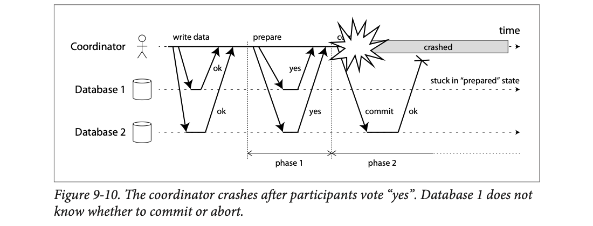
Phase 1 is normal: both databases vote yes. At the start of phase 2 the coordinator sends "commit" to Database 2 (which commits and replies ok, but the reply hits a dead coordinator, ✕) and then explodes (grey "crashed" bar) before sending commit to Database 1. Database 1's line says "stuck in 'prepared' state".
Here the coordinator decided commit and DB 2 got the request, but the coordinator crashed before telling DB 1. DB 1 doesn't know whether to commit or abort. A timeout doesn't help: aborting unilaterally would make it inconsistent with DB 2 (committed); committing unilaterally is unsafe too, because another participant might have aborted.
Without the coordinator, a participant can't know. In principle participants could ask each other how they voted and agree, but that's not part of 2PC.
The only way 2PC can complete is by waiting for the coordinator to recover. That's why the coordinator must write its decision to its log on disk before sending commit/abort: on recovery it reads the log to resolve in-doubt transactions. Any transaction without a commit record in the coordinator's log is aborted. So the commit point of 2PC reduces to a regular single-node atomic commit on the coordinator.
Use the simulator in plate 29 with "after decision; commit reached only DB 2" to replay exactly this figure, with and without recovery.
Fig 9-10 played slowly. DB 1 holds a row lock on order 9001 while it waits. Times and IDs are invented.
tx-7d3f. Both are now prepared: they can't abort on their own any more.tx-7d3f: COMMIT. It sends commit to DB 1. DB 1 commits and releases the lock. Any transaction with no commit record in the log would be aborted instead.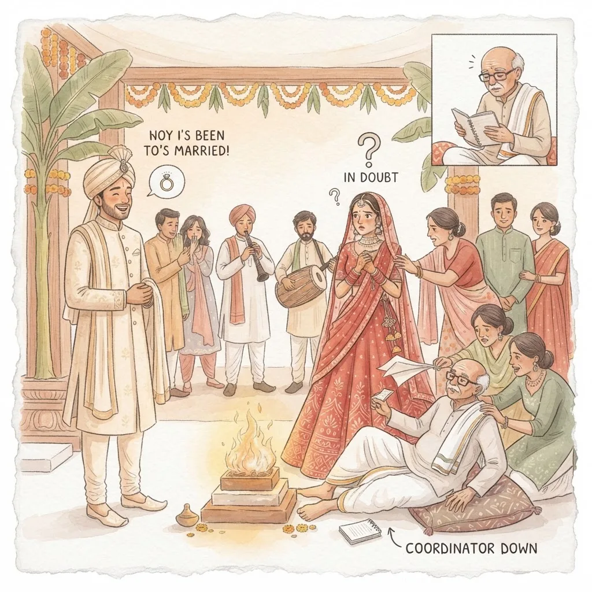
The faint-after-"I do" story, but now it's the pandit who collapses after telling only the groom "you're married". The bride is standing there: is she married or not? She can't decide alone: if she walks out and the groom thinks they're married, chaos. She must wait until the pandit recovers and checks his notebook. Where it breaks: in life, the guests can testify; 2PC doesn't let participants consult each other.
The decision lives in exactly one place: the coordinator's log. A yes-voter has given up its own right to decide, so the only source of truth is offline. That single point of failure is why 2PC is called "blocking".
2PC is a blocking atomic commit protocol: it can get stuck waiting for the coordinator. In theory, a non-blocking protocol is possible (doesn't get stuck if a node fails), but making it work in practice isn't straightforward.
The alternative three-phase commit (3PC) assumes a network with bounded delay and nodes with bounded response times. In most real systems, with unbounded network delay and process pauses (Ch.8), it can't guarantee atomicity.
In general, non-blocking atomic commit needs a perfect failure detector: a reliable way to tell whether a node crashed. With unbounded delay a timeout isn't reliable: a request may time out due to a network problem when nothing crashed. So 2PC is still used, despite the known blocking problem.
3PC needs to know that a silent node is dead before it moves on without it. In case 1 that is true. In case 2 the node is fine and may even have acted on the request; only its reply is late. At the moment the timeout fires, the sender sees exactly the same thing in both cases. If 3PC treats case 2 as a crash, the two sides can reach different decisions and atomicity is lost. Hence the book's point: non-blocking atomic commit needs a perfect failure detector, and real networks with unbounded delay do not have one.
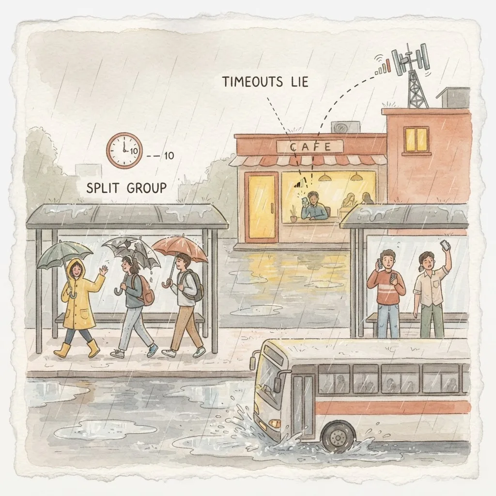
3PC is like a plan that says "if the organiser hasn't called within 10 minutes, he's definitely dead, so go ahead". Works if phones never lag. In India's monsoon network, "no call in 10 minutes" might just mean a weak signal, and acting on it can split the group. Where it breaks: exactly there: timeouts lie.
Non-blocking means participants can finish without the coordinator, which requires them to be sure the coordinator is gone (not just slow) and what it might have done. Only bounded delays make that certainty possible.
Distributed transactions, especially 2PC, have a mixed reputation. Seen as giving an important safety guarantee that's hard to get otherwise; also criticised for operational problems, killing performance, and promising more than they deliver. Many "cloud" services don't implement them because of operational problems.
Some implementations carry a heavy penalty: distributed transactions in MySQL are reported to be over 10 times slower than single-node ones. Much of 2PC's cost is the extra disk forcing (fsync) needed for crash recovery, and the extra network round-trips.
Rather than dismiss them, look closer; there are lessons. Two very different types are often mixed up:
| Type | What it is | Examples | How well it works |
|---|---|---|---|
| Database-internal | A distributed database (replication + partitioning by default) runs transactions among its own nodes; all run the same software | VoltDB, FoundationDB, MySQL Cluster's NDB storage engine | Can use any protocol and technology-specific optimisations; often works quite well |
| Heterogeneous | Participants are two or more different technologies: databases from different vendors, or non-databases like message brokers | Postgres + a message broker in one transaction | Must ensure atomic commit across entirely different systems; a lot more challenging |
Toy numbers to compare a single-node commit with 2PC. Count of fsyncs and round trips follows the protocol; the millisecond values are yours to set.
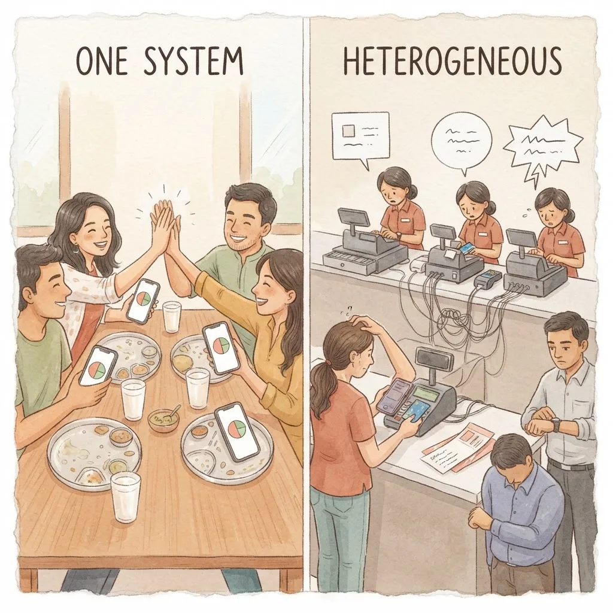
Splitting a restaurant bill inside one app (Splitwise between friends who all use it) is easy. Splitting one payment across Paytm, a bank card and a gift voucher from three companies, all-or-nothing, is much harder: each speaks a different language and none was built to cooperate. Where it breaks: payment gateways do pull this off with standards; that's what XA tries to be for databases.
Every participant must fsync its prepare state and the coordinator must fsync its decision, adding disk waits; plus two extra network round trips. Inside one product you can batch and optimise these; across vendors you only get the lowest common denominator.
Heterogeneous transactions let different systems integrate in powerful ways. Example: a message from a queue is acknowledged as processed if and only if the database transaction processing it committed. Implemented by atomically committing the message acknowledgement and the database writes in one transaction. With distributed transaction support this is possible even if the broker and database are unrelated technologies on different machines.
If either delivery or the DB transaction fails, both abort, so the broker can safely redeliver later. By atomically committing the message and its side effects, the message is effectively processed exactly once, even if it took a few retries.
Only possible if all affected systems use the same atomic commit protocol. If a side effect is sending an email and the email server doesn't support 2PC, the email might be sent two or more times on retries. But if all side effects roll back on abort, processing can be retried as if nothing happened.
More on exactly-once in Ch.11.
| Attempt | DB write | Queue ack | Email (no 2PC) |
|---|---|---|---|
| 1: crashes before commit | rolled back | rolled back → redeliver | already sent! |
| 2: succeeds | committed | committed | sent again (duplicate) |
| Net effect | once | once | twice |
Top: the database insert and the queue acknowledgement commit together or not at all. The first try fails, so both are rolled back and the broker redelivers. The second try commits both. The order shows up once in the database even though processing ran twice: "effectively exactly once".
Bottom: the email server is not part of the distributed transaction (it does not speak 2PC). The abort can undo the database row but cannot un-send the email, so the customer gets two.
Order number and steps are invented; the email case is the book's own example.
Message offset 1207: order #42 paid on a queue. The consumer writes a row in its database. Message broker and database take part in one distributed transaction. Offsets and IDs are invented.
payments(order=42) inside transaction tx-a. Nothing is committed yet.tx-b, then the coordinator commits both: the row and the ack together.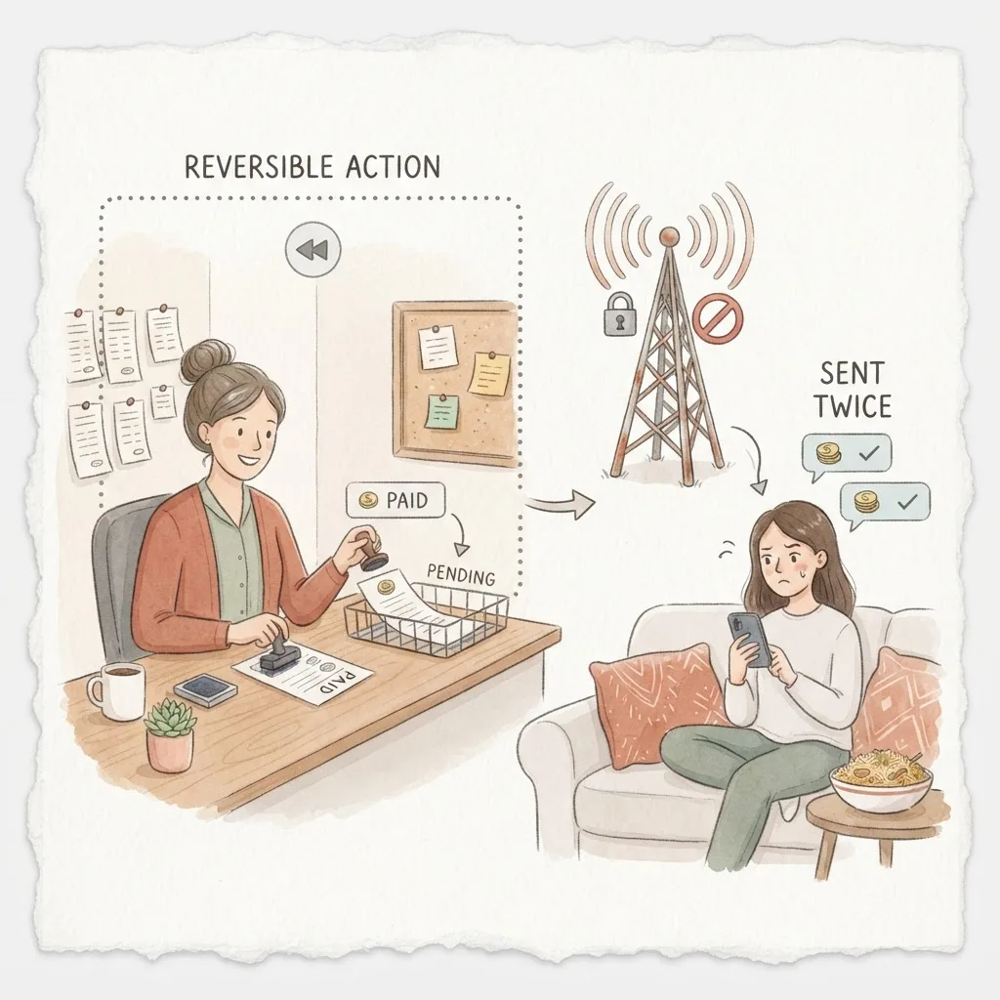
A Swiggy order: "mark order paid" and "remove from pending queue" happen together or not at all, so a retry is harmless. But if the step also sends you an SMS "Payment received!", a retry sends a second SMS, because the SMS gateway can't be rolled back. Where it breaks: an SMS is mild; a duplicate bank transfer isn't.
"Exactly once" is really "at-least-once delivery + effects that are atomic with the ack". Anything outside the atomic boundary sees each attempt, so it must be idempotent or deduplicated instead.
X/Open XA (eXtended Architecture) is a standard for 2PC across heterogeneous technologies, introduced in 1991 and widely implemented: relational databases (PostgreSQL, MySQL, DB2, SQL Server, Oracle) and message brokers (ActiveMQ, HornetQ, MSMQ, IBM MQ).
XA is not a network protocol: it's a C API for talking to a transaction coordinator. Other languages have bindings; in Java EE, XA is implemented with the Java Transaction API (JTA), supported by many JDBC (Java Database Connectivity) drivers and JMS (Java Message Service) drivers for brokers.
XA assumes your app uses a network driver or client library to talk to participants. An XA-supporting driver calls the XA API to see whether an operation is part of a distributed transaction, and if so sends the needed info to the database server. The driver also exposes callbacks through which the coordinator asks the participant to prepare, commit or abort.
The coordinator implements the XA API. The standard doesn't say how; in practice it's often a library loaded into the application's process (not a separate service). It tracks participants, collects prepare responses (via driver callbacks), and keeps a log on local disk of each transaction's outcome.
If the application process crashes or its machine dies, the coordinator goes with it. Participants with prepared but uncommitted transactions are stuck in doubt. The coordinator's log is on the app server's local disk, so that server must restart and the library must read the log to recover outcomes. Only then can it use the drivers' XA callbacks to tell participants to commit or abort. The database server can't contact the coordinator directly: all communication goes through its client library.
The coordinator is a library inside the Java app process. Its log is a file on the app server's local disk. Host names and IDs are invented.
xid-55: COMMIT to the local log file./var/xa/tx.log, finds xid-55: COMMIT, and uses the drivers to send commit to both. Locks are released. Until that restart, nothing could move.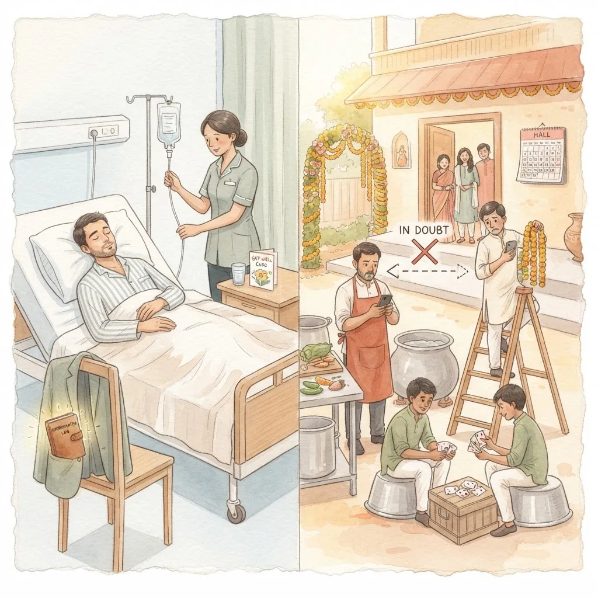
A wedding planner who keeps the only copy of "who confirmed what" in a diary in his pocket. If he's hospitalised, the caterer and decorator who confirmed can't proceed or cancel; they can't even call him, because only he calls them. Where it breaks: a planner could share his diary; XA's design keeps the log local to the app server.
XA standardises the interface (prepare/commit/abort callbacks), not the coordinator's durability or availability. Embedding the coordinator in the app process makes deployment easy and recovery hard: the app server now owns critical state.
Why care so much about an in-doubt transaction? Can't the rest of the system carry on? The problem is locking.
Transactions usually take a row-level exclusive lock on rows they modify (to prevent dirty writes, Ch.7 "Read committed"). For serializable isolation with 2PL, they also take shared locks on rows they read.
The database can't release those locks until the transaction commits or aborts (the shaded bars in Fig 9-9). So with 2PC, locks are held throughout the in-doubt period. If the coordinator crashed and takes 20 minutes to restart, locks are held 20 minutes. If the coordinator's log is lost, locks are held forever, until an administrator resolves it manually.
While locked, no other transaction can write those rows; depending on the database, maybe not even read them. Other transactions touching that data block. Large parts of your app can become unavailable until the in-doubt transaction is resolved.
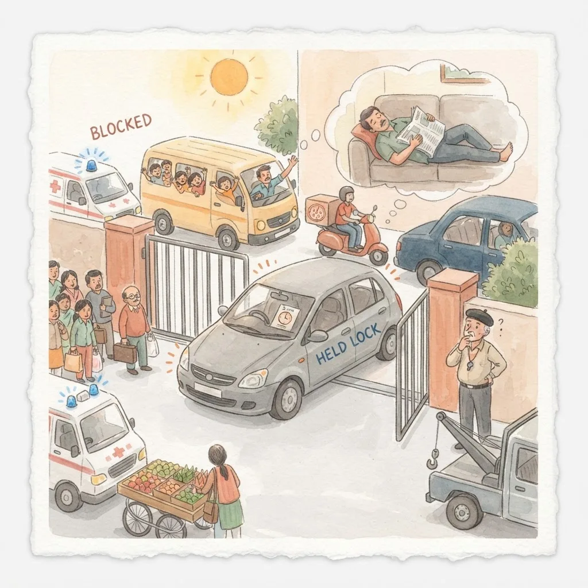
A car parked across the society gate by someone who said "I'll be back in 2 minutes" and then fell asleep. The car isn't doing anything, but nobody else can get in or out until the owner returns. Where it breaks: the watchman can tow the car; a database won't release the lock on its own, because that could break atomicity.
The participant has promised it can commit, so it must keep the rows exactly as they are (other writes could break the promise). The lock is the mechanism that keeps the promise. Hence: in doubt ⇒ locked ⇒ blocked.
In theory a restarted coordinator recovers state from its log and resolves in-doubt transactions. In practice orphaned in-doubt transactions happen: the coordinator can't decide the outcome, e.g. the log is lost or corrupted by a software bug. They can't be resolved automatically, so they sit forever, holding locks and blocking others.
Even rebooting database servers won't help: a correct 2PC implementation must preserve the locks of in-doubt transactions across reboots (otherwise it risks breaking atomicity). A sticky situation.
The only way out: an administrator manually decides to commit or roll back. They examine the participants of each in-doubt transaction, see whether any participant already committed or aborted, and apply the same outcome to the others. Potentially a lot of manual work, most likely under high stress and time pressure during a serious outage (why else would the coordinator be broken?).
Many XA implementations have an emergency escape hatch: heuristic decisions, letting a participant unilaterally commit or abort an in-doubt transaction without the coordinator. "Heuristic" here is a euphemism for probably breaking atomicity, since it violates 2PC's system of promises. Only for catastrophes, not regular use.
The administrator's rule from the book: look at every participant of the stuck transaction; if any has already committed (or aborted), apply that same outcome to the rest. Here DB 1 committed, so DB 2 and DB 3 must commit. A heuristic decision skips that check and lets DB 2 choose by itself. If it picks abort, the transaction is half-committed, which is exactly the "probably breaking atomicity" the book warns about.
Transaction and database names are invented.
A court case where the only file was lost in an office flood. The parties are frozen: property can't be sold, accounts stay frozen. Eventually a judge must reconstruct what happened by questioning everyone and issue a ruling. A "heuristic decision" is a clerk deciding on his own to unfreeze one account; fast, but may contradict the eventual ruling. Where it breaks: courts can reverse rulings; committed data seen by others can't be un-seen.
The protocol's guarantee depends on one durable log. When that log is gone, no algorithm can recover the missing fact; only out-of-band investigation (a human checking all participants) can.
XA solves a real problem (keeping participant systems consistent) but brings major operational problems. Key realisation: the transaction coordinator is itself a kind of database (it stores outcomes), so treat it with the same care.
Should we give up keeping several systems consistent? Not quite: alternative methods achieve it without heterogeneous distributed transactions (Ch.11 and a later chapter). But first, finish consensus.
If each participant is independently available with probability p, a 2PC transaction needs all n of them; a majority-quorum decision needs just over half.
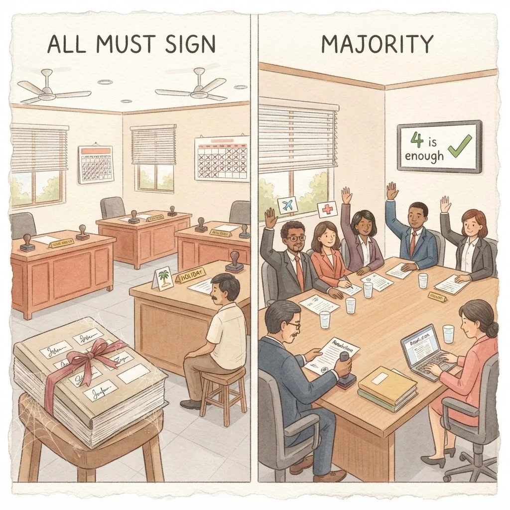
A government file that needs signatures from 7 departments: if any one officer is on leave, the whole file stops. A committee that needs just 4 of 7 votes keeps working when a couple are on leave. Where it breaks: some decisions legally need all signatures (atomic commit); consensus is for decisions where a majority is enough.
Requiring everyone multiplies the failure probabilities: pn drops quickly as n grows. Majority voting tolerates minority failures, which is the core trick of fault-tolerant consensus next.
Informally: get several nodes to agree on something. E.g. several people try to book the last seat on a plane, the same theatre seat, or the same username: a consensus algorithm picks which of these mutually incompatible operations wins.
Formally: one or more nodes propose values, and the algorithm decides on one. In seat booking, each node handling a customer proposes that customer's ID; the decision says who got the seat. The algorithm must satisfy:
Footnote xiii. This variant is uniform consensus, equivalent to regular consensus in asynchronous systems with unreliable failure detectors. Papers usually say processes rather than nodes.
Agreement and integrity are the core: everyone decides the same, and once decided, no changing your mind. Validity rules out trivial solutions, e.g. always deciding null regardless of proposals (satisfies agreement and integrity, but not validity).
Without fault tolerance, the first three are easy: hard-code one node as "dictator" making all decisions. But if it fails, no more decisions. That's exactly 2PC: if the coordinator fails, in-doubt participants can't decide.
Termination formalises fault tolerance: the algorithm can't sit doing nothing forever; it must make progress. Even if some nodes fail, the others must decide. (Termination is a liveness property; the other three are safety properties, Ch.8.)
The model assumes a crashed node suddenly disappears and never comes back. Imagine an earthquake: a landslide destroys the datacenter, and your node is buried under 30 feet of mud, never coming back. Any algorithm that waits for a node to recover can't satisfy termination. In particular, 2PC doesn't meet termination.
If all nodes crash, nothing can be decided. There's a limit: any consensus algorithm needs at least a majority of nodes functioning correctly to assure termination. So termination assumes fewer than half the nodes are crashed or unreachable. But most implementations ensure the safety properties (agreement, integrity, validity) always hold, even if a majority fails or there's a severe network problem. A large outage can stop the system processing requests, but can't make it decide something invalid.
Most algorithms assume no Byzantine faults (Ch.8): a node that doesn't follow the protocol (e.g. sends contradictory messages to different nodes) may break safety. Consensus can be made robust to Byzantine faults if fewer than one third of nodes are Byzantine-faulty, but such algorithms are rarely used in practice and not discussed here.
| Property | Kind | Seat-booking meaning | Does 2PC satisfy it? |
|---|---|---|---|
| Uniform agreement | safety | every node names the same winner | yes |
| Integrity | safety | nobody changes the winner later | yes |
| Validity | safety | the winner actually asked for the seat | yes (in its own commit/abort sense) |
| Termination | liveness | a decision is eventually made even if some nodes die | no: waits for coordinator |
Green column: what a correct run looks like. Red column: one way to break each rule. The red "null" box is the book's own example of why validity exists (an algorithm that always decides null agrees and never changes its mind, but is useless). The red termination box is 2PC's problem: waiting for a node that, in this model, is "under 30 feet of mud" and never comes back.
Names are invented.
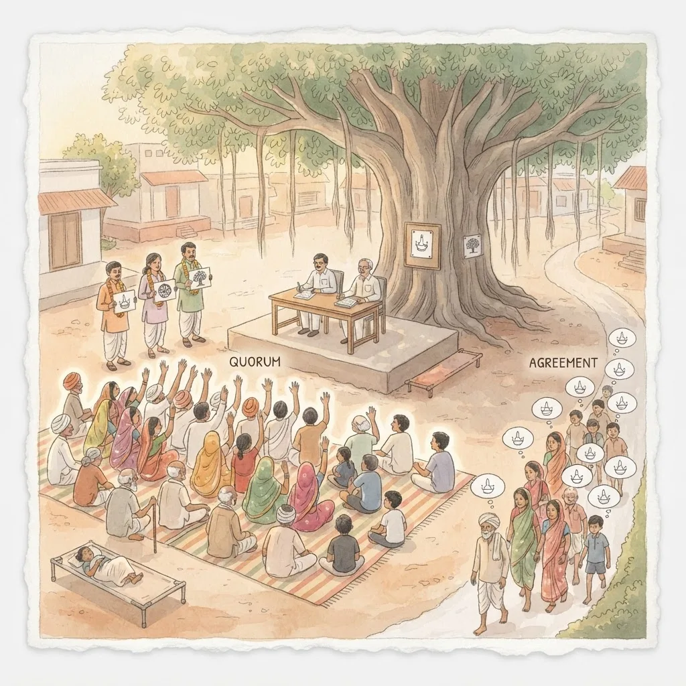
A gram sabha choosing one candidate for sarpanch from those nominated. Agreement: everyone leaves knowing the same name. Integrity: no re-announcing a different name tomorrow. Validity: the winner was actually nominated (not "nobody"). Termination: even if some villagers fall ill, the sabha still reaches a decision, as long as a quorum (majority) attends. Where it breaks: villagers who lie about votes (Byzantine) are out of scope here.
Majority is the magic number because any two majorities overlap in at least one node. So two conflicting decisions can't both gather a majority (safety), and as long as a majority is alive, a decision can be gathered (liveness).
Best-known fault-tolerant consensus algorithms: Viewstamped Replication (VSR), Paxos, Raft and Zab. Many similarities, but not the same. The book skips full details; the high-level ideas are enough unless you're implementing one yourself (probably not advisable: it's hard).
Most don't directly use the single-value formal model. They decide on a sequence of values, which makes them total order broadcast algorithms.
Total order broadcast delivers messages exactly once, in the same order, to all nodes. That's equivalent to repeated rounds of consensus: each round, nodes propose the next message, then decide the next one to deliver. Each consensus decision = one message delivery:
| Consensus property | Becomes this log property |
|---|---|
| Agreement | all nodes deliver the same messages in the same order |
| Integrity | messages are not duplicated |
| Validity | messages are not corrupted or fabricated out of thin air |
| Termination | messages are not lost |
VSR, Raft and Zab implement total order broadcast directly (more efficient than one-value-at-a-time rounds). For Paxos, this optimisation is Multi-Paxos.
Slots 1 to 3 are decided and will never change (integrity). Every node holds the same entries in them (agreement). For slot 4, several nodes may each want their own message to go next; one round of consensus picks one, which must be a message somebody actually sent (validity), and the round must finish while a majority is alive (termination). The losers simply try again for slot 5. Viewstamped Replication, Raft and Zab build this log directly, and Paxos does it in its Multi-Paxos form, because that is more efficient than running fully separate one-value rounds.
Log contents are invented.
Three nodes each want their own message in the next free slot. Consensus picks exactly one. Messages are invented.
set x=9, N2 proposes add w, N3 proposes del y.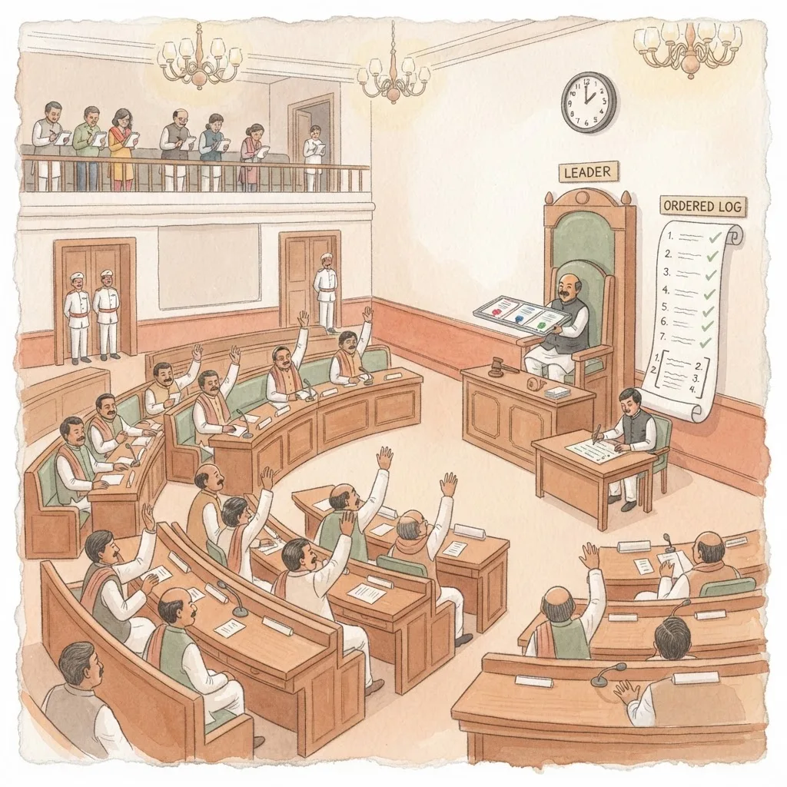
A parliament session where each item on the agenda is voted on in turn; the official record is the ordered list of passed motions. Doing a full vote for each motion is slow, so the Speaker (leader) proposes the next items in batches and members just confirm. Where it breaks: parliament has fixed sessions; a log never ends.
A replicated log is the useful product; single-value consensus is just one slot of it. Running the log directly lets a stable leader skip repeated election overhead per slot.
Ch.5's single-leader replication takes all writes at the leader and applies them to followers in the same order. Isn't that total order broadcast? Why didn't Ch.5 worry about consensus?
It depends on how the leader is chosen. If humans in your ops team manually choose and configure it, you have a "consensus algorithm" of the dictatorial variety: only one node accepts writes; if it goes down, the system is unavailable for writes until operators configure another leader. That can work in practice, but it doesn't satisfy termination: progress needs human intervention.
Some databases do automatic leader election and failover (Ch.5 "Handling node outages"). That's closer to fault-tolerant total order broadcast, i.e. solving consensus.
But: split brain. All nodes must agree who the leader is. So we need consensus to elect a leader. But consensus algorithms are total order broadcast, total order broadcast is like single-leader replication, and single-leader replication needs a leader… It seems to elect a leader we first need a leader. To solve consensus, we must first solve consensus. How to escape?
Three database nodes, leader N1. Times are invented.
A college club that says "the president conducts elections" but the president just resigned. Who conducts the election for the new president? Where it breaks: clubs just ask the faculty advisor (a human dictator); consensus algorithms need a rule that works without one.
The trick is to not require a globally unique leader at all times, only a unique leader per numbered term, and to make every decision double-check with a majority that no newer term exists.
All these protocols use a leader internally, but don't guarantee it's unique. They give a weaker guarantee: an epoch number (ballot number in Paxos, view number in Viewstamped Replication, term number in Raft), and within each epoch, the leader is unique.
Whenever the current leader is thought to be dead, nodes vote for a new leader. The election gets an incremented epoch number, so epochs are totally ordered and monotonically increasing. If two leaders from different epochs conflict (maybe the old leader wasn't dead after all), the higher epoch prevails.
Before deciding anything, a leader must check there's no other leader with a higher epoch that might decide differently. How does it know it hasn't been ousted? Recall "The truth is defined by the majority" (Ch.8): a node can't trust its own judgment; thinking you're leader doesn't mean others accept you. It must rely on votes from a majority.
This uses a quorum. For every decision, the leader sends the proposed value to the other nodes and waits for a majority to respond in favour. A node votes in favour only if it isn't aware of any other leader with a higher epoch.
So there are two rounds of voting: once to choose a leader, and again to vote on the leader's proposal. The key insight: the quorums for the two votes must overlap. A node needs a majority to become leader, and a proposal needs a majority to be decided, so at least one node voting on a proposal must have seen any newer leader election. If a majority still favours the proposal, the leader can be sure it still holds leadership, and can safely decide.
This looks like 2PC, but the biggest difference: fault-tolerant consensus needs votes from a majority, while 2PC needs a yes from every participant. Also, consensus algorithms define a recovery process to bring nodes to a consistent state after a new leader is elected, so safety always holds. These differences are key to consensus's fault tolerance.
Click a node to move it to the other side of a network partition (purple ring = side B). Old leader n1 starts on epoch 1. Elect a new leader on either side, then let either leader propose a value.
Society committee elections every year, numbered "Committee 2024", "Committee 2025". A secretary from Committee 2024 who missed the news still sends out a circular. Residents check: "I already know there's a Committee 2025, so I ignore your 2024 circular." Since every circular needs signatures from most flats, and most flats voted in the 2025 election, the stale secretary can't collect enough signatures. Where it breaks: residents may forget; nodes durably store the highest epoch they've seen.
Any two majorities of n nodes share at least one node. The node in the overlap knows about the newer epoch and refuses the old leader's proposal, so the old leader can't get a majority. A leader that does get a majority therefore knows no newer leader has decided anything conflicting.
Consensus algorithms are a huge breakthrough: concrete safety (agreement, integrity, validity) in a world where everything else is uncertain, while staying fault-tolerant (progress as long as a majority is up and reachable). They give total order broadcast, so they can implement linearizable atomic operations in a fault-tolerant way. But they're not used everywhere, because benefits have costs:
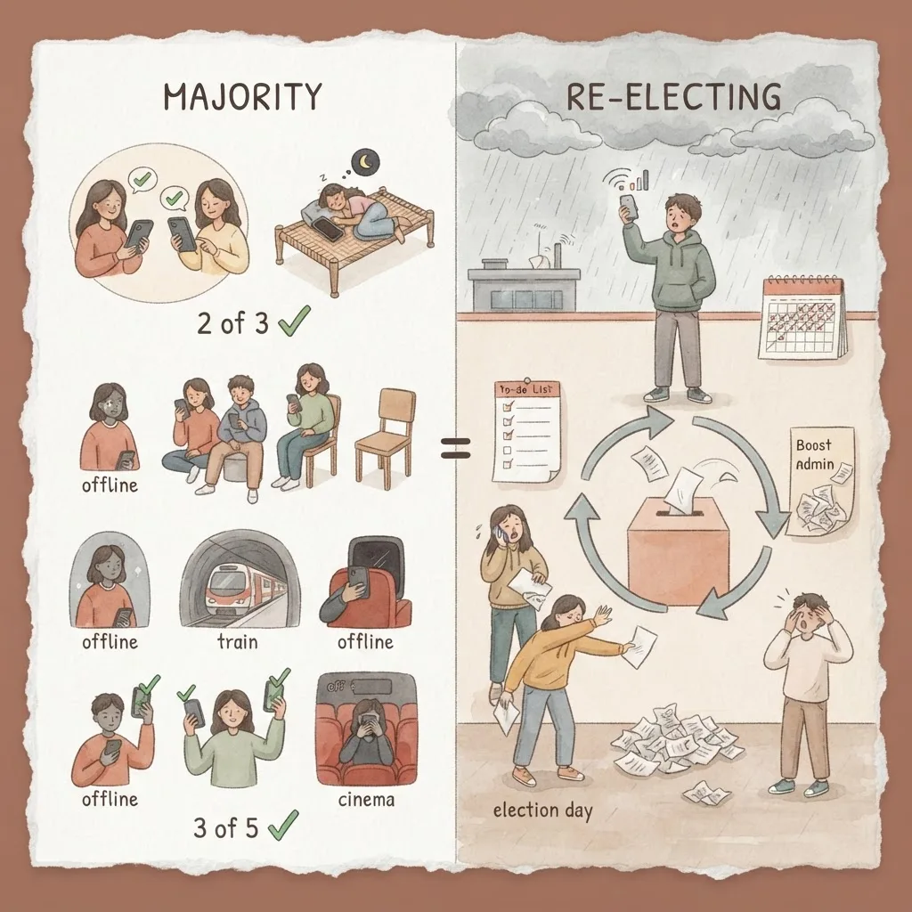
A WhatsApp group admin vote that needs a majority: with 3 members, one can be offline; with 5, two can. Adding a 4th member doesn't help (you still need 3 of 4, so still only one can be offline). And if the group keeps thinking the admin "left" because his network is patchy, it keeps re-electing and nobody gets anything done. Where it breaks: humans can wait and see; consensus nodes act on timeouts.
Tolerated failures f = ⌊(n−1)/2⌋. Even n gives no extra tolerance over n−1, which is why clusters use 3 or 5. Every write waits for a majority round trip, so latency is set by the median-ish slowest node, and long timeouts vs false elections is a constant tuning fight.
ZooKeeper and etcd are described as "distributed key-value stores" or "coordination and configuration services". The API looks like a database: read/write a key's value, iterate over keys. So why go to the effort of consensus? What makes them different?
As an application developer you rarely use ZooKeeper directly; it isn't well suited as a general-purpose database. More likely you rely on it indirectly: HBase, Hadoop YARN, OpenStack Nova and Kafka all rely on ZooKeeper running in the background.
ZooKeeper and etcd hold small amounts of data that fit entirely in memory (still written to disk for durability). That data is replicated across all nodes with a fault-tolerant total order broadcast algorithm: exactly what database replication needs.
ZooKeeper is modelled after Google's Chubby lock service, and implements not only total order broadcast (hence consensus) but also useful features for distributed systems:
Of these, only the linearizable atomic operations truly require consensus. But the combination is what makes ZooKeeper so useful for coordination.
Two workers want the lock "/leader". The lock is an ephemeral node tied to the holder's session; each acquisition gets a higher zxid usable as a fencing token.
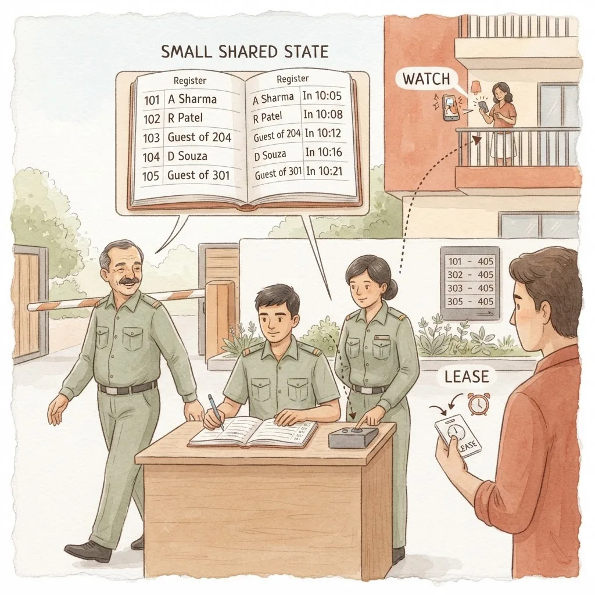
A society's security desk register: it is small (just who's inside), every guard sees the same entries in the same order, each entry has a serial number (zxid), a visitor's pass expires if they don't check in every hour (session + heartbeat), and residents can ask "ping me when my guest arrives" (watch). Where it breaks: the register is a book; ZooKeeper's register must survive a guard (server) vanishing, which is what consensus provides.
Every write to ZooKeeper goes through Zab (its total order broadcast), so all servers apply the same sequence and the zxid is the position in that log. Sessions and ephemeral nodes turn "client stopped heartbeating" into a log entry ("delete its nodes") that all servers agree on.
The ZooKeeper/Chubby model works well when you have several instances of a process and one must be chosen as leader or primary; if it fails, another takes over. Useful for single-leader databases, and also job schedulers and similar stateful systems.
Another case: a partitioned resource (database, message streams, file storage, distributed actor system, etc.) where you decide which partition goes to which node. As nodes join, some partitions move to them to rebalance load (Ch.6). As nodes are removed or fail, others take over their work.
This is done with careful use of atomic operations, ephemeral nodes and notifications. Done right, the application recovers from faults automatically without humans. Still not easy; libraries like Apache Curator provide higher-level tools on top of the ZooKeeper client API. But far better than implementing consensus from scratch, which has a poor success record.
An app may start on one node and grow to thousands. Majority votes over that many nodes would be terribly inefficient. Instead ZooKeeper runs on a fixed number of nodes (usually 3 or 5) and votes among those, while supporting a potentially large number of clients. So ZooKeeper lets you "outsource" some coordination work (consensus, operation ordering, failure detection) to an external service.
ZooKeeper's data is usually slow-changing: e.g. "the node running on 10.1.1.23 is the leader for partition 7", changing on a scale of minutes or hours. It isn't for runtime application state that may change thousands or millions of times per second. For replicating that, use other tools such as Apache BookKeeper.
Three app nodes hold partitions 1 to 9. ZooKeeper holds the map. Each app node has an ephemeral znode that lives only as long as its session. IPs and timeouts are invented.
/partitions/7 → 10.1.1.23. Each node has an ephemeral znode /nodes/10.1.1.2x and sends a heartbeat every few seconds./nodes. ZooKeeper notifies them: "the member list changed".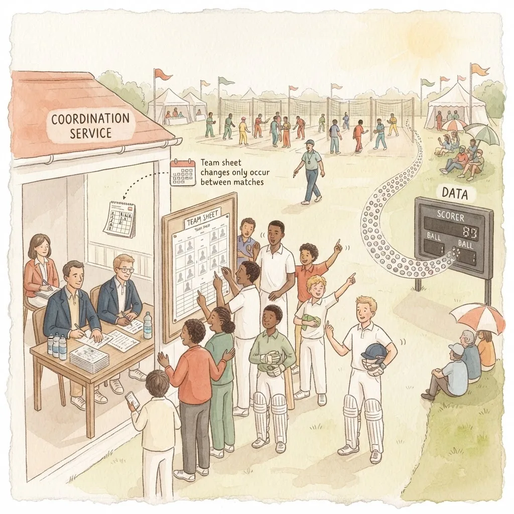
A cricket tournament with hundreds of players but only a 3-member selection committee. Players don't vote on who bats where; they read the team sheet the committee publishes, which changes per match, not per ball. Ball-by-ball scores go to a separate scoring system (BookKeeper). Where it breaks: a committee meets on schedule; ZooKeeper must respond within milliseconds when a node dies.
Consensus cost grows with the number of voters and with the write rate. Keeping voters few and data small/slow makes it cheap enough; clients just read, watch, and create ephemeral nodes.
ZooKeeper, etcd and Consul are also often used for service discovery: finding which IP address to connect to for a particular service. In "cloud" datacenters, VMs come and go, so you often don't know services' IPs ahead of time. Instead, services register their network endpoint in a service registry at startup, where others can find them.
But does service discovery need consensus? Less clear. DNS is the traditional way to look up a service's IP, and uses multiple layers of caching for performance and availability. DNS reads are absolutely not linearizable, and slightly stale results usually aren't a problem. More important: DNS is reliably available and robust to network interruptions.
Service discovery doesn't need consensus, but leader election does. If your consensus system already knows the leader, it makes sense to use that to help other services discover it. For this, some consensus systems support read-only caching replicas: they asynchronously receive the log of all decisions but don't vote, so they can serve reads that don't need to be linearizable.
| Need | Must be linearizable? | Good tool |
|---|---|---|
| "Which IP serves payments-api?" | No, a bit stale is OK | DNS (cached), or registry's read-only replicas |
| "Who is the leader of partition 7?" | Yes for the election itself | ZooKeeper / etcd (consensus) |
Only the three voters run the consensus algorithm, so adding more readers does not slow down decisions. The caching replicas receive the decided log a little later and answer "who is the leader?" lookups from many services. Those answers can be slightly old, which is fine for discovery, the same way a DNS answer that is a few seconds old is fine. If a client needs a linearizable answer (say, before taking a lock), it asks the voters instead.
ZooKeeper calls such non-voting members observers; etcd has learner members that also do not vote. The book does not name them.
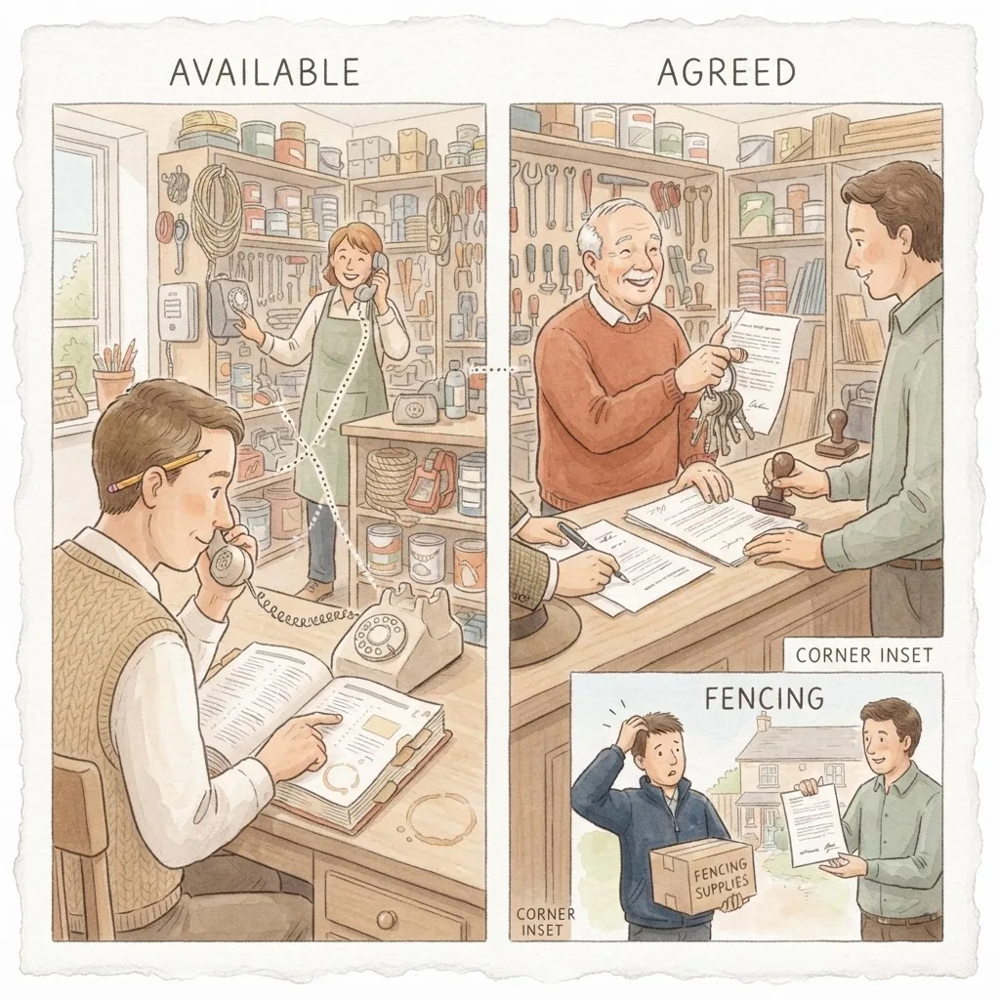
A Justdial-style directory: if a shop's number in the directory is a day old, you still mostly reach the shop; the directory being up is more important than being perfectly current. But choosing who is the shop's owner today must be an official, agreed decision. Where it breaks: a stale directory entry for a leader can send writes to an ex-leader, so clients must still verify (fencing).
Non-voting replicas apply the same decision log asynchronously, so they're never wrong about history, only behind. That's acceptable for lookups and offloads read traffic from the voting core.
ZooKeeper and friends belong to a long research history of membership services, back to the 1980s, important for building highly reliable systems, e.g. air traffic control.
A membership service decides which nodes are currently active, live members of a cluster. As Ch.8 showed, unbounded network delays make it impossible to reliably detect whether another node failed. But if you couple failure detection with consensus, nodes can agree on which nodes are alive and which aren't.
A node may still be incorrectly declared dead by consensus while actually alive. But it is very useful to have agreement on the current membership. E.g. choosing a leader could simply be choosing the lowest-numbered current member. That's impossible if nodes have divergent opinions on who the members are.
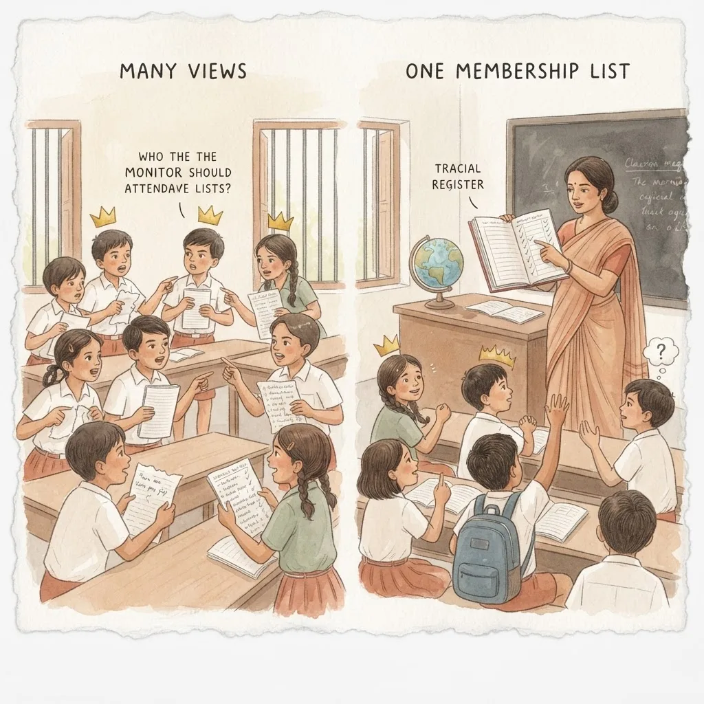
Attendance in a class: if each student keeps their own list of who's present, "the first roll number present is class monitor today" gives different monitors in different lists. If the teacher announces one official attendance list (even if it wrongly marks someone absent), everyone agrees who's monitor. Where it breaks: a wrongly-marked-absent student can protest; a node declared dead must accept it (and rejoin later).
Failure detection alone gives each node an opinion. Putting "node X is dead" through consensus turns opinions into one shared fact, so any deterministic rule applied to the shared membership gives the same answer everywhere.
The chapter looked at consistency and consensus from several angles.
Linearizability: make replicated data look like a single copy with atomic operations. Appealing because it's easy to understand (a database behaves like a variable in a single-threaded program), but slow, especially with large network delays.
Causality: imposes an ordering based on cause and effect. Unlike linearizability's single timeline, causality is weaker: some things can be concurrent, so history is a timeline with branching and merging. Causal consistency avoids linearizability's coordination overhead and is much less sensitive to network problems.
Even capturing causal order (e.g. with Lamport timestamps), some things can't be done: the unique username example. A node accepting a registration must know no other node is concurrently registering the same name. That led to consensus.
Consensus = deciding something so that all nodes agree on the decision, and the decision is irrevocable. A wide range of problems turn out to be reducible to consensus and equivalent to each other:
All are straightforward with a single node, or if you give decision-making to one node. That's a single-leader database: all power with the leader, which is why such databases can provide linearizable operations, uniqueness constraints, a totally ordered replication log, and more.
But if the leader fails or is unreachable, the system can't progress. Three ways to handle it:
A single-leader database gives linearizability without running consensus on every write, but still needs consensus to maintain and change leadership. Having a leader just "kicks the can down the road": consensus is still needed, elsewhere and less often. Good news: fault-tolerant algorithms and systems exist.
Tools like ZooKeeper provide "outsourced" consensus, failure detection and membership. Not easy to use, but much better than writing your own algorithms to survive all of Ch.8's problems. If you need something reducible to consensus and want it fault-tolerant, use something like ZooKeeper.
Not every system needs consensus: leaderless and multi-leader systems typically don't use global consensus. Their conflicts are a consequence of not having consensus across leaders. Maybe that's fine: maybe we need to cope without linearizability and learn to work with branching and merging version histories.
The chapter cited lots of theory. Papers and proofs aren't always easy and sometimes assume unrealistic things, but they are incredibly valuable: they show what can and can't be done and reveal counter-intuitive flaws. The references are worth exploring.
This ends Part II: replication (Ch.5), partitioning (Ch.6), transactions (Ch.7), failure models (Ch.8), consistency and consensus (Ch.9). Part III turns to practical systems built from heterogeneous building blocks.
| Term | Plain meaning |
|---|---|
| Eventual consistency (convergence) | Stop writing, wait, and replicas will eventually agree. No promise about when. |
| Linearizability | Behave as if there's one copy and every operation happens at one instant; reads see the latest value. A.k.a. atomic / strong / immediate / external consistency. |
| Register | A single object (key, row, document) that can be read and written. |
| Regular register | Reads concurrent with a write may return old or new (may flip-flop). Weaker than linearizable. |
| Compare-and-set (cas) | Set x to new only if x currently equals old; else error. Atomic. |
| Strict serializability (strong-1SR) | Serializable + linearizable together. |
| Compensating transaction | A later transaction that corrects a mistake (apology, refund). |
| CAP theorem | In a network partition, choose linearizable or available. Narrow and best avoided. |
| Network partition | Nodes alive but cut off from each other (not sharding). |
| Causality / happened-before | A before B if B could have known about or depended on A. |
| Total order / partial order | Every pair comparable / some pairs incomparable (concurrent). |
| Causal consistency | Every replica respects cause-before-effect. Strongest model that isn't slowed by network delays and stays available. |
| Logical clock / sequence number | Counter-based numbers ordering operations, not wall-clock time. |
| Lamport timestamp | (counter, nodeID); everyone carries the max seen. Total order consistent with causality. |
| Version vector | Per-node counters that can detect concurrency (Lamport can't). |
| Total order broadcast (atomic broadcast) | Reliable delivery + same order on every node; like an append-only log. |
| State machine replication | Same deterministic writes in the same order → same state. |
| Sequential / timeline consistency | Slightly weaker than linearizable: a single order exists, reads may lag. |
| Consensus | Nodes propose values; algorithm decides one; agreement, integrity, validity, termination. |
| FLP result | No deterministic consensus without clocks/timeouts if a node may crash. Timeouts or randomness make it solvable. |
| Atomic commit | All participants commit or all abort. |
| Two-phase commit (2PC) | Prepare (vote) then commit/abort, run by a coordinator. Blocking. |
| Coordinator (transaction manager) | The component driving 2PC and logging the decision. |
| Commit point | Coordinator writes its decision to disk; final from then on. |
| In doubt / uncertain | Participant voted yes, hasn't heard the decision; must wait, holding locks. |
| Three-phase commit (3PC) | Non-blocking in theory; needs bounded delays. |
| Perfect failure detector | Always correctly knows if a node crashed. Doesn't exist with unbounded delays. |
| XA | X/Open eXtended Architecture: C API standard for heterogeneous 2PC (1991). |
| Heuristic decision | Participant decides an in-doubt transaction alone; likely breaks atomicity. |
| Epoch (ballot / view / term) | Number of the current leadership period; unique leader per epoch; higher wins. |
| Quorum (majority) | More than half the nodes; any two overlap. |
| Multi-Paxos | Paxos optimised to decide a sequence of values (a log). |
| zxid / cversion | ZooKeeper's monotonically increasing transaction ID / version number. |
| Session, ephemeral node, watch | ZooKeeper client liveness via heartbeats; nodes auto-deleted when the session dies; change notifications. |
| Service discovery | Finding the address of a service; doesn't need consensus. |
| Membership service | Agreed list of live cluster members (failure detection + consensus). |
| System | What the chapter says it does |
|---|---|
| Apache ZooKeeper | Consensus (Zab) for linearizable writes; locks, leader election, zxid/cversion fencing, sessions, ephemeral nodes, watches; linearizable reads need sync(). Used by HBase, Hadoop YARN, OpenStack Nova, Kafka. Usually 3 or 5 nodes. |
| etcd | Consensus (Raft); linearizable writes; "quorum reads" for linearizable reads; locks and leader election. |
| Consul | Used for service discovery. |
| Google Chubby | Lock service ZooKeeper is modelled after. |
| Apache Curator | Higher-level recipes on top of ZooKeeper's client API. |
| Apache BookKeeper | For replicating fast-changing application state (not ZooKeeper's job). |
| Oracle RAC | Linearizable lock per disk page over shared storage; dedicated cluster interconnect. |
| Cassandra | Waits for read repair on quorum reads, but LWW makes concurrent writes non-linearizable. |
| Riak | Doesn't do synchronous read repair (performance), so quorums aren't linearizable. |
| Google Spanner | Waits out clock uncertainty so timestamps respect causality (footnote viii). |
| PostgreSQL, MySQL, DB2, SQL Server, Oracle | Support XA transactions. MySQL distributed transactions reported >10× slower than single-node. |
| ActiveMQ, HornetQ, MSMQ, IBM MQ | Message brokers supporting XA. |
| Narayana, JOTM, BTM, MSDTC | 2PC coordinators (transaction managers). |
| Java Transaction API (JTA), JDBC, JMS | Java's way of doing XA via database and broker drivers. |
| VoltDB, FoundationDB, MySQL Cluster (NDB) | Database-internal distributed transactions. |
| Paxos / Multi-Paxos, Raft, Zab, Viewstamped Replication | Fault-tolerant consensus algorithms implementing total order broadcast; Raft has edge cases with one flaky link. |
| DNS | Service lookup that is cached and not linearizable, and that's fine. |
| git | Version history is like a causal-dependency graph (branches and merges). |
| Multi-core CPUs (x86) | RAM isn't linearizable without memory barriers, for performance. |
Since this edition: Kafka has replaced its ZooKeeper dependency with its own Raft-based controller quorum (KRaft); Kubernetes stores all cluster state in etcd; CockroachDB and TiDB run Raft per data range; MongoDB's replica-set election protocol is Raft-like. These are context, not claims from the book.
It says nothing about when replicas converge; until then reads can return anything or nothing, and you may not read your own write.
Bob started his read after Alice's read had returned the new score (he heard her). Linearizability forbids any read that starts after a read that saw the new value from returning the old one.
Once any read has returned the new value, every later read (on any client) must also return it: the value flips atomically at one point and never flips back.
No. SSI reads from a consistent snapshot that deliberately excludes newer writes, so reads aren't linearizable. 2PL or actual serial execution typically are.
Yes (Fig 9-6). While the write is in flight, reader A's quorum includes the one replica that has it (returns 1), and later reader B's quorum hits two replicas that don't yet (returns 0). Fix: synchronous read repair + writers reading quorum state first, and still no linearizable cas without consensus.
They can't write or do linearizable reads: the app is unavailable for them until the link is repaired. They could only do stale reads from the follower.
Partitions are faults that happen to you, not a choice. When there's no partition you can have both C and A; only during a partition must you choose. Better: "either Consistent or Available when Partitioned".
Every node and client carries the maximum counter seen and nodes jump to it, so an effect always gets a higher counter than its cause. Odd/even counters advance independently, so a causally later op can get a smaller number.
That works only after you've collected all operations. A node deciding right now can't know whether another node has a concurrent claim with a lower timestamp without asking everyone, which halts if any node is down. You need to know when the order is final: total order broadcast.
It waits for 5 because the sequence has no gaps. Lamport timestamps have gaps, so you can't tell whether anything is missing.
The coordinator might have decided commit and another participant may already have committed (Fig 9-10). Aborting would break atomicity. It must wait (in doubt), holding its locks, until the coordinator recovers.
Termination: 2PC can block forever on one node. Consensus algorithms need only a majority's votes, use epoch numbers so a newer leader can take over, and have a recovery process; they progress while a majority is up.
Majority of 4 is 3, so only 1 can fail, same as with 3 nodes (majority 2). Tolerated failures = ⌊(n−1)/2⌋.
Only linearizable atomic operations need consensus. Service discovery doesn't, but if ZooKeeper already knows who the leader is (from leader election), it's convenient to publish that; read-only non-voting replicas can serve those non-linearizable reads.